生成时间：2026-10-09T11:46:52+08:00
今日保留论文数：18
内容构成：今日新文 18 篇；补充推荐 0 篇；经典旧文精读 0 篇
阅读分层：重点精读 6 篇；相关简报 12 篇。精读依据科学贡献筛选，简报保留方法、结论及局限。
数据源警告
- 本次有 1 个数据源访问异常；完整错误已保留在运行日志中，日报只显示摘要。
- 其他来源：1 个异常。
- 主要错误类型：其他 1 次。
高能天体物理重点
1. The Origin of the Fermi Halo-like Emission: A New Model of the Fermi Bubbles
- 来源：arXiv / astro-ph.HE
- 链接：https://arxiv.org/abs/2610.10695
- 作者：Ilias Cholis, Leo Qiyuan Hu, Yi-Ming Zhong
- 公告 / 来源日期：2026-10-09
- 阅读层级：重点精读
- 评分：novelty 8/10，importance 9/10，relevance 10/10，final 10.00/10
- 推荐理由：多弥散模板与多ROI检验把晕状GeV余量归入费米泡子结构，直接影响暗物质和银河高能背景解释。
中文题目：银河晕状伽马射线余量来自哪里：费米泡内部结构的新模板检验
做了什么：银河高银纬的伽马射线图像在扣除常规背景后，仍有一块曾被解释为暗物质湮灭的晕状辐射。本文用2008年8月至2025年4月的Fermi-LAT数据，在0.275–928 GeV的16个能段重新做空间模板拟合：既复现原来的分析设置，又改变点源掩膜、像素尺度和研究天区，并在适用范围内比较100套银河弥散模型。作者要检验的不是能否拟合出正的余量，而是同一物理成分能否在不同天区保持自洽的空间强度比例。
额外辐射确实存在，但高银纬部分的归一化不能按所测试的暗物质密度平方投影在各天区间一致变化。作者将费米泡细分为面亮度平坦的泡、均匀体发射率投影形成的内部泡和南北茧状结构后，原晕状模板所吸收的光子大幅减少。内部泡的谱较软，平坦泡在高能端占优。这里得到的是一种更成功的背景分解和形态解释；它没有排除更暗的暗物质信号，也没有消除另一个低银纬成分——银河中心GeV超额。
为什么重要：高统计量并不能自动保护弥散信号搜索免受模型误配影响：形态相似的逆康普顿背景、泡结构和暗物质模板可以互相分配光子，得到很窄但有偏的参数区间。本文把跨天区的归一化自洽性作为物理检验，说明“余量真实”与“暗物质解释成立”是两件不同的事。其主要推进是提供可公开复用的新泡模板及能谱，改变了这一特定高银纬晕状超额的解释依据；作者对其他暗物质或银河中心超额的立场不应被扩大为本次分析已经证明的结论。
理论 / 观测 / 仪器方法价值：最值得借鉴的是分层控制分析自由度的方法：先复现既有结果，再分别改变掩膜、像素聚合、前景模型和空间模板，最后检查哪些结论跨选择仍成立。本文还展示了如何用邻近能段和其他波段的物理预期诊断模板分配异常，例如逆康普顿归一化偏离传播模型一个数量级，以及Loop I两个壳层亮度比与射电预期不协调。迁移到扩展源分析时，必须同时保留曝光、点扩散函数和未掩膜区域的定义，不能只拿最终模板做无误差的固定背景。
为什么应该关注：费米泡是银河宇宙线输运和中心活动史的重要观测场所，也是弥散伽马射线及暗物质搜索的背景。对高能和IACT研究，新的软硬成分分解可用于决定跨能段比较时采用哪一个空间模板，但LAT中的高能显著性不等于已在TeV仪器中确认对应结构。值得后续检验的是：更长波长同步辐射能否独立识别较低能电子占优的内部泡，以及动力学模型能否同时重现泡边缘、倾斜茧和能谱差异。
展开详细解读：文章讲解、背景、理论、重点章节、图表与相关工作
文章详细讲解
科学问题。 先前工作在离银面10至60度的区域发现约20 GeV附近较突出的额外辐射，并用近似球对称暗物质湮灭模板描述。困难在于，这里还投影着费米泡、Loop I和银河电子的逆康普顿辐射。用某种形状成功拟合一片余量，只说明它能承接那些光子，并不说明发射物质真的按该形状分布。本文要求同一候选成分在切掉低银纬区域后，强度变化仍符合其三维物理模型。
作者怎么做。 分析使用CLEAN、前转换事件和能量依赖的点源掩膜，在固定能段把不同发射过程投影为计数模板。先使用原研究的九参数设置及较粗像素复现其余量，再把源掩膜、Loop I分解和正负残差模板逐项改变。银河前景不是只用一套：大天区可比较20套全天模型，较小的内银河区域再加入80套区域模型，因此不能说100套都覆盖了整个高银纬天区。
关键结果。 在部分低银纬区域，暗物质状模板的幅度按预期变化；进入更高银纬后却偏亮，且与逆康普顿和平坦泡模板明显退化。引入倾斜、南强北弱的茧后，20 GeV附近的晕状分量至少减少约一半；再用内部泡替换晕状模板，拟合继续大幅改善。新的平坦泡、内部泡和茧分别给出不同空间形态和能谱，原来被压在单个“晕”模板上的辐射因而有了更具体的解释。
局限和下一步。 椭球形、均匀体发射率、南北内部泡等强度等都是模型假设，巨大似然改善不意味着这些几何参数已被无模型地测出。附录的几何扫描大多一次只改变一个参数，不能替代完整的联合不确定性。作者认为辐射更可能来自电子逆康普顿过程，但未在这里完成一套唯一的注入、输运与动力学历史反演。下一步应以独立波段和物理输运模型检验这种分解，尤其区分新模板吸收背景失配与捕捉真实独立结构。
关键结果是怎么做出来的
第一步是固定数据口径。LAT数据覆盖2008年8月4日至2025年4月29日，使用16个能段、0.1度像素和标准质量筛选；点源掩膜半径随能量及源的检验统计量改变。低能点扩散函数较宽，需要更大的掩膜。这些处理直接决定有多少源翼部光子可能泄漏到弥散成分，因而不是与科学结论无关的技术细节。
第二步是复现实验并找出自由度之间的交换。原方法使用在特定前景模型及能量下构造的正、负残差图。本文只在对应前景模型下使用它们，避免把依赖某模型的残差错误移植到别的前景。图3显示晕状模板与逆康普顿、正残差之间有相关性；图4又显示，把像素从0.1度合并到10度会放宽逐像素总计数非负的约束，从而允许更大的负残差补偿，其他模板的归一化也随之改变。
第三步不再只问总拟合优度，而是比较不同银纬窗口。若各窗口里的信号都来自同一个固定密度轮廓，其平均强度必须按各自的视线积分比例变化。图10在5.5 GeV把这个检验画得最清楚：高银纬窗口得到的暗物质状强度与低银纬窗口不能由一个共同归一化解释。较窄的统计误差条没有消除这种不一致，反而表明需要认真处理模板系统误差。
第四步是把额外空间结构放回费米泡。作者先比较泡边界，再把茧表示为有倾斜的长椭球对，允许南北体发射率不相同。所选前景下，加入茧带来约3998的两倍对数似然改善；其最佳几何给出南北发射率比约10，但这不是忽略前景及几何协方差后的普适测量。更新边界和茧后仍有剩余，于是加入不倾斜的扁椭球内部泡来检验非平坦面亮度。
第五步检查能谱与空间分解能否共同成立。用内部泡替代晕状模板，在所列比较中再得到约5018的两倍对数似然改善。图17比较20套前景：内部泡低能较亮，平坦泡在约3 GeV以上占优，茧的谱大致到50 GeV保持接近负二次幂、随后变软。谱带合并五套最佳前景各自的二倍标准差拟合带，是有限模型集合下的统计加前景差异表征，不是涵盖所有可能背景的严格概率区间。
最后回到不同科学对象的边界。作者另在较低银纬内银河窗口使用新泡模板，发现银河中心GeV超额的谱和幅度仍与此前结果相容。因此不能把高银纬晕状分量被泡结构解释，写成银河中心超额也被同样解释，更不能从一次模型分解宣布银河暗物质搜索已经结束。
展开背景、理论、公式、模型和章节导读
背景知识
费米泡是银河中心上下延伸的大尺度伽马射线结构。望远镜记录的是天空方向和光子能量，并不直接给出每个方向上辐射物质离我们多远。同一条视线可能穿过银河盘、晕和多个泡结构。因此从二维图像恢复发射过程，必须结合空间模板、能谱和其他波段，而不能仅凭轮廓相似认定物理来源。
银河弥散辐射的主要过程包括宇宙线核与气体碰撞产生中性介子后衰变、电子在气体中的轫致辐射，以及电子散射低能光子的逆康普顿辐射。前两项大体跟随气体，逆康普顿则依赖电子和辐射场的空间分布，往往更平滑。暗物质湮灭候选同样可形成平滑分量，所以特别容易与电子背景混淆。
“平坦泡”是一个面亮度模板的名称，并非说三维电子密度处处相同。均匀发光的球或椭球沿中心视线经过更长路径，通常投影为中心更亮；要得到接近平坦的面亮度，体发射率需随位置变化，或者多个分量叠加。本文把平坦面亮度与均匀体发射率这两个不同假设拆开，正是得到内部泡的关键。
银河中心GeV超额与本文高银纬晕状辐射也不是同义词。前者更靠近中心，后者来自更宽、更高银纬的窗口。二者可能在一套模板拟合中部分混合，但要用各自的空间归一化和谱来区分。本文对一种晕状解释提出挑战，并没有由此确定银河中心超额的唯一机制；文章引言中对不同机制的评价属于作者对既有文献的立场。
基础理论 / 方法脉络
模板拟合先把一个物理场景转成每个像素应收到多少光子，再让不同场景的幅度变化。模型必须经过曝光和仪器角分辨响应，才能与实际计数比较。如果忽略点扩散函数，低能点源翼部或锐利边缘会被误当成弥散结构；如果忽略掩膜，各分析窗口的归一化就可能失去同一口径。
暗物质湮灭的瞬时光子产生率与局部密度平方成正比，所以其方向依赖由密度平方的视线积分决定。给定密度轮廓、太阳位置及天区，这个积分比值固定。粒子质量和湮灭截面会改谱和整体幅度，却不能任意修改每一个天区之间的比例。这使跨区域一致性比单一区域拟合出一个正幅度更有物理约束力。
对泡和茧，作者使用的是体发射率沿视线积分。在均匀椭球假设下，面亮度就是经过发光区的路径长度乘以发射率；倾斜会改变投影形状及角尺度，南北发射率不等则改变亮度比。几何不对称与粒子注入不对称可能产生相似观测，因此本文的南北比值不能不加条件地翻译成黑洞两侧喷流功率比。
统计上，像素计数采用泊松似然，已有高银纬谱提供惩罚项。数据量大时，固定模板内的幅度误差可以很小，但模板本身仍可能错误。本文因此同时检查后验参数相关性、跨天区变化和多套前景；这些检验约束不同误差来源。似然改善只在相同数据和明确定义的模型比较中有意义，不同ROI的绝对似然不能直接排序。
公式与推导
下面把原文式(3)–(7)与明确标注的教学关系连成推断链。先定义原文的广义NFW密度轮廓：
其中半径与尺度半径用相同长度单位，本文取尺度半径20 kpc，并以太阳位置的密度0.4 GeV每立方厘米归一化；内斜率取1或1.25。该式规定三维形状，尚不是望远镜直接看到的强度。
湮灭视线因子是标准教学定义，解释本文如何把式(3)投影：
这里路径长度为s，银经银纬为方向。平方来自两粒子反应；若讨论衰变则不适用该平方。粒子谱和截面可并入每个能段的共同幅度，因此可以不先选定粒子模型，直接比较不同区域的形态比例。
把方向强度平均到ROI，得到跨区自洽关系；这是对本文图10检验的教学表达：
两个区域必须在同一能段、同一掩膜约定下比较，或像本文展示谱那样用模型补回点源掩膜方向。共同粒子谱因子抵消，留下几何预测；允许每区任意改归一化就失去了这个检验。
对于均匀体发射率的椭球，采用另一条教学投影关系：
这里q按每体积、每立体角定义，L为经过椭球的路径长度；若把q定义成总发射率，应另除以四倍圆周率。等体发射率不等于等面亮度，正是内部泡能吸收平坦模板留下余量的原因。椭球中心、半轴和旋转决定L，原文式(6)–(7)给出其完整几何。
不同成分叠加为原文式(4)：
能段为j、像素为p、物理模板为T，每段拟合的无量纲系数为c。介子与轫致辐射的系数被绑定，其他成分的自由度按方案改变。实际模型计数还须施加曝光及PSF响应，可记作下式这一教学简写：
响应算子包含曝光、能段积分和角响应，不是额外一个任意自由参数。固定这些处理后，幅度变化才代表模型对数据的分配，而不是仪器效应变化。
将原文式(5)的泊松部分限于未掩膜像素，可写成等价且避免零乘对数歧义的形式：
观测计数为n，U为未掩膜集合，惩罚项约束各向同性背景、泡及Loop I的已有谱。它们限制模板任意吸收光子，但也引入参考谱及模型假设；不能把带惩罚的结果当作完全无先验测量。
最后定义相同数据上两个方案的拟合改善：
本文所列3998和5018分别属于不同的模板比较，不应机械相加或开平方宣布全局若干标准差发现。边界选择、几何扫描、非嵌套模型及前景不确定性都会影响零假设分布。推断链真正闭合于跨ROI比例、谱差异及前景检验共同支持一种解释，而不是单独最大化这个数。
模型拟合 / 应用方法
输入层包括LAT计数图、曝光、能量依赖角响应，以及气体相关、逆康普顿、各向同性、Loop I和候选泡结构模板。前景集合覆盖宇宙线扩散区大小、扩散与再加速参数、源分布、气体及辐射场等不同假设。大窗口用20套全天模型，小内银河窗口可用全部100套，保证模型实际覆盖范围与数据窗口一致是复现的第一项检查。
参数层先按能段拟合各模板归一化。原文先用DYNESTY探索，再用NumPyro中的NUTS/HMC细化后验；谱约束以惩罚项加入。应把参数后验相关图与最佳谱同时看：某成分被压低、另一成分升高，不一定意味着物理上真的少了或多了粒子，也可能是模板在有限窗口内近似共线。
形态层对边界与椭球参数做方案比较。最佳茧模型固定中心距3.5 kpc，半长轴2.0 kpc、横向半轴1.0 kpc，倾角35度、偏航负29度，南北发射率比10；内部泡中心距6.2 kpc、竖向半轴2.5 kpc、横向半轴4.3 kpc。应把这些数读作特定前景和受限几何族下的最佳配置，而不是具有完整联合置信区间的独立测量。
诊断层依次看改变像素合并后的稳定性、不同ROI的共同归一化、前景集合下谱的包络以及模型预测与拟合后幅度的偏离。新结构加入后，气体相关和银河逆康普顿模板幅度更接近原始物理预测，这是有价值的内部一致性检查，但并非独立数据验证。拟合输出仍需防止把原数据选出的形态再在同一数据上的改善重复计作独立证据。
应用层建议以公开模板为起点，在自己的事件类别、曝光和PSF下重新生成响应，并保留多个前景方案。若换成TeV或微波数据，必须重新考虑目标粒子能量和辐射机制，不能默认所有能段共用相同谱形或同一相对分量。本文的有限模型包络可作为系统误差研究范例，却不能直接替代新分析的数据专属不确定性预算。
重点章节 / 结果段落怎么读
- 先读II节的成分定义：特别区分真实发射模板与由某一背景模型残差制作的正负图，理解为什么后者不能跨前景任意移植。
- 接着读III节和表2、4、6：把能段、掩膜、ROI和模板自由度对应起来，之后才比较图3至10的变化；不同天区绝对似然不能直接比较。
- IV节以图10为核心：追问一个共同密度轮廓能否同时解释低、高银纬归一化，而不仅是每次拟合能否找到余量。
- V节把图13与17一起读：前者给新成分的空间分配，后者给软硬差异；椭球假设和前景差异决定它们能够解释到哪里。
- VI节及附录C、D检查结论边界：更暗的暗物质信号仍可能存在，GCE没有被本模型消除，一维几何扫描不等于完整联合后验。
关键图表与解读
图10
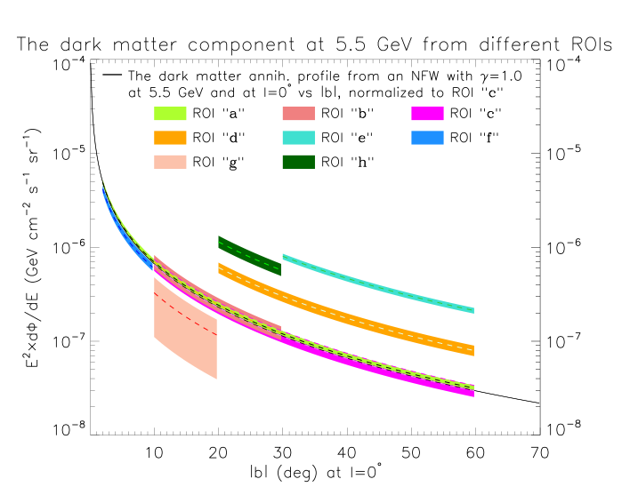
图注：在银经零度方向，5.5 GeV暗物质湮灭模板分量对应的通量随绝对银纬的变化。黑色实线是为晕状辐射所假定的NFW密度轮廓对应的湮灭剖面，并按ROI c的拟合结果归一化。不同颜色的带表示不同ROI的结果，带宽为一倍标准差拟合范围，反映被分配给该模板的光子数及相应统计误差；多数ROI的带较窄。仅包含绝对银纬不超过20度的ROI，与仅包含不低于20度区域的ROI，得到的模板幅度明显不一致。
怎么看这张图：先比较低银纬与高银纬色带能否由同一黑线覆盖。关键是跨区强度比例失配，不是某一色带远离零；带宽主要是固定模型下的统计口径。 直接展示暗物质形态解释的自洽性检验
来源与置信度：arXiv HTML；source verified；https://arxiv.org/html/2610.10695v1/DM_annihilation_profile_from_alt_ROIs.svg
图13
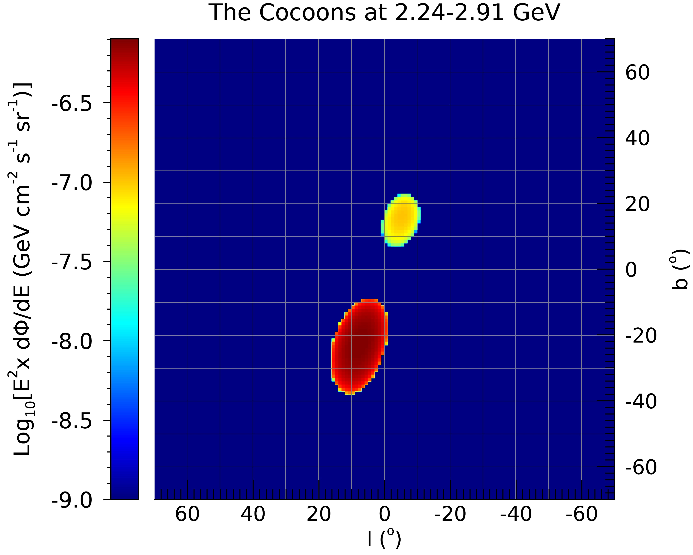
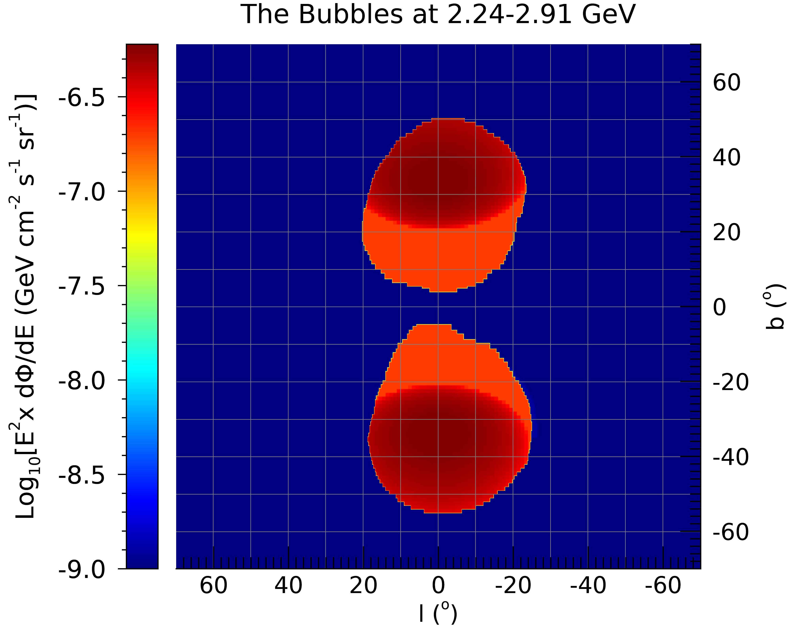
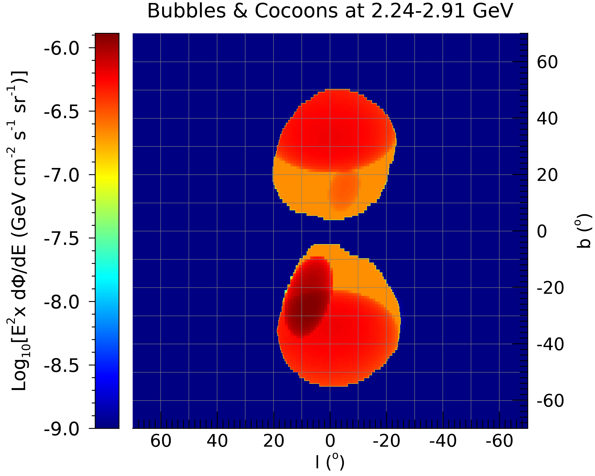
图注：2.24–2.91 GeV能段茧状结构和主费米泡的形态，展示范围为140度乘140度。左：茧；中：平坦泡与内部泡的组合，即主泡；右：茧和主泡的组合。采用笛卡尔网格，像素为0.25度乘0.25度。图中未加入Fermi-LAT点扩散函数平滑，以突出各发射分量的形态差别。颜色表示微分通量乘能量平方。为清楚显示模板边界，图上另加了每平方厘米、每秒、每球面度为10的负9次方GeV的通量底值。
怎么看这张图：左右不对称主要看倾斜茧；中图体现均匀体发射率内部泡与平坦面亮度分量的叠加。这是模型模板，未卷积PSF，也不是直接观测残差图。 展示新模板的几何分解与边界
来源与置信度：arXiv HTML；source verified；https://arxiv.org/html/2610.10695v1/plots/Cocoons_101.jpg；https://arxiv.org/html/2610.10695v1/plots/Flat_Bubbles_E_and_Inner_Bubbles_97.jpg；https://arxiv.org/html/2610.10695v1/plots/Combined_Bubbles_Final.jpg
图17
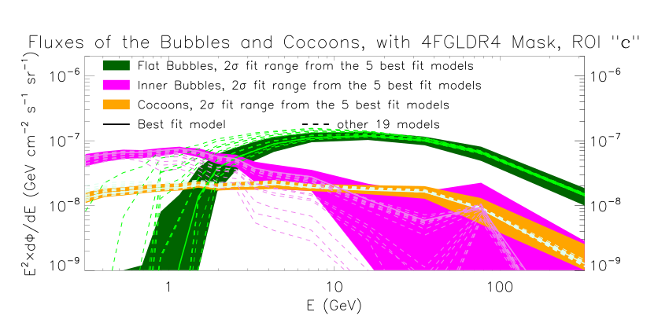
图注：ROI c内拟合得到的发射谱：平坦泡为浅绿线及深绿带，内部泡为品红线及同色带，茧为浅青线及橙色带。实线是采用最佳银河弥散发射模型时各分量的最佳拟合谱；虚线是参考文献8中其余19套银河弥散模型得到的最佳谱。每个分量的色带合并了20套模型中拟合LAT数据最佳的五套模型各自的二倍标准差拟合带，具体合并方式见正文。
怎么看这张图：低能比较内部泡与平坦泡，高能则看平坦泡占优。虚线和包络反映有限前景集合的差异，不能只选择最窄的一条当作全部误差。 展示能谱分解及前景模型不确定性
来源与置信度：arXiv HTML；source verified；https://arxiv.org/html/2610.10695v1/Fluxes_of_Bubbles_and_Cocoons_all_GDE_models.svg
强相关工作
直接争论对象是Totani 2025关于20 GeV晕状超额的研究（本文参考文献130，arXiv:2507.07209）。本文复现它的模板设置后逐项改变像素与前景，不否认额外光子，而挑战其暗物质形态解释。这是同类LAT数据上方法与背景模型的比较，不能作为两个独立观测的统计合并；这里的前作关系来自本次已读论文对复现实验的明确说明。
基础模板来自Su、Slatyer与Finkbeiner 2010的费米泡发现工作（参考文献127，arXiv:1005.5480），并用Ackermann等2014的泡能谱研究（参考文献9，arXiv:1407.7905）提供谱约束。本文的新增部分是调整边界、显式区分茧与内部泡并考察其能谱差异，而非重新发现整个费米泡。Cholis等2022的区域弥散模板库（参考文献50，arXiv:2112.09706）则扩大了前景假设集合；这些链接已在本文参考文献中核验，本次没有把每篇前作都声称为重新全文精读。
同一事件 / 同类源线索：
相似工作：
基础理论 / 方法工作：
相反观点 / 张力线索：
（未提供）
2. From GeV to PeV: Orbital Modulation and Wind-Regulated Ultrahigh-energy Emission in Cygnus~X-3
- 来源：arXiv / astro-ph.HE
- 链接：https://arxiv.org/abs/2610.11881
- 作者：Su-Yu Wan, Ruo-Yu Liu, Xing-Fu Zhang, Dmitriy Khangulyan
- 公告 / 来源日期：2026-10-09
- 阅读层级：重点精读
- 评分：novelty 8/10，importance 8/10，relevance 10/10，final 9.70/10
- 推荐理由：CygX3几何与GeV至PeV谱和轨道曲线联合建模，盘风调控质子靶密度提供新可检验机制；历史PeV不能视作确认。
中文题目：Cyg X-3的GeV至PeV联合模型：盘风怎样调节超高能伽马射线
做了什么：Cyg X-3是一颗致密天体与沃尔夫–拉叶星组成的4.8小时双星。它的GeV与超高能伽马射线光变峰不在同一轨道相位，因而不能简单地用一团共同辐射粒子解释所有能段。本文把同时期Fermi-LAT与LHAASO的能谱、轨道光变放在同一个双星—喷流几何中：喷流电子散射恒星光子产生GeV辐射；从更靠内位置逃出的高能质子与恒星光子或周围气体作用，产生TeV至PeV辐射。
联合模型能够描述这四类观测，并给出一个环境调节机制：速度很快但密度较低的吸积盘风把较稠密的伴星风推离部分质子轨迹，压低质子与核碰撞的效率。盘风收窄、减弱或转向时，质子可重新穿过稠密伴星风，超高能亮度便可能大幅上升。这个解释仍依赖弹道输运、风几何和辐射模型；作者没有求解质子如何被加速，也没有用模型重新确认1980年代未获后续确认的PeV报告。
为什么重要：超高能亮度并不单独测量加速器功率，它还取决于粒子是否遇到足够多的靶光子或靶气体。本文利用GeV轨道曲线先约束几何，减少只拟合PeV谱时几何与质子注入的简并，再把吸积盘外流引入靶场。这使“源变亮是因为加速更强”之外的解释变成可检验的条件模型：同样的质子功率，在不同风结构下可以产生很不一样的伽马射线效率。其价值是跨波段约束的一致性，不是宣称所有参数已被唯一确定。
理论 / 观测 / 仪器方法价值：可复用的方法是让统计量较高的能段约束双方共享的几何，再让不同辐射过程分别约束粒子谱和环境。作者保留正、反喷流及从喷流共动系到观测系的方向变换，避免把共动系各向同性误当成观测系各向同性。用于其他伽马双星时，需要明确轨道相位零点、倾角、恒星温度半径、粒子逃逸位置及风的动量通量；若磁偏转很强，就不能直接沿用这里的直线质子轨迹。
为什么应该关注：这项工作把LHAASO、Fermi-LAT与MAGIC的约束放在同一源模型里，对IACT能段与PeV观测如何连接尤其有参考价值。光子与核相互作用还关联中微子产生，但本文没有给出可直接采用的中微子探测预报，不能自行填入事件数。未来应同时追踪X射线吸积状态、射电喷流方向和GeV轨道曲线；如果PeV增亮确由风转向造成，应寻找这些量的协同变化，而不只比较两个不同时期的总通量。
展开详细解读：文章讲解、背景、理论、重点章节、图表与相关工作
文章详细讲解
科学问题。 为什么同一双星的GeV和PeV辐射有不同轨道调制？如果高能质子离开喷流后才产生辐射，它们遇到的气体与恒星光场会随轨道相位变化。仅用超高能谱，可以通过调整质子数量、谱形、发射位置或靶密度得到相似结果。本文希望利用电子辐射的几何信息，约束这些解释自由度，并问风结构是否能控制PeV亮度。
作者怎么做。 模型固定双星间距和观测倾角，共享喷流方向及速度。电子在指定喷流高度产生各向异性的外部逆康普顿辐射；高能质子则在有效逃逸高度被释放，假设逃逸后近似沿直线传播。作者分别积分沿途的恒星光子相互作用与气体碰撞，再加入恒星、银河辐射场和宇宙微波背景的吸收，联合比较两个能段的谱和相位曲线。
关键结果。 GeV数据主要支持约为双星间距的电子发射高度，喷流速度约0.60倍光速；质子释放高度约为双星间距的十分之一，但误差允许更靠近致密天体。模型中，数百TeV以下的质子—核分量较平缓，PeV附近的光强子分量形成谱隆起并贡献主要调制。快盘风通过排挤稠密WR风使气体靶柱降低，而非通过关闭质子加速器来压暗当前状态。
局限和下一步。 风碰撞采用薄壳接触面，忽略激波层、混合与团块；盘风质量损失率也不是直接测量。截止能量最佳值约108 PeV，但一倍标准差范围极宽，不能说已精确测得百PeV加速极限。纯WR风对照说明环境改变可以显著增亮，历史PeV信号本身仍不确定。最直接的检验是新的同时期多波段数据能否同时支持风状态、喷流方向和调制变化。
关键结果是怎么做出来的
首先看共同几何而不是先看质子谱。作者采用间距约为2.65乘10的11次方厘米、倾角30度，轨道相位零点定义为致密天体上合。喷流方向在GeV与超高能计算中相同，但电子发射高度和质子释放高度不同。这样允许两个波段在同一系统中具有不同相位峰，而不必令它们出自完全无关的源。
其次，GeV外部逆康普顿散射的碰撞角随轨道变化，因此光变形状对喷流朝向和发射位置敏感。联合拟合给出电子发射高度约2.75乘10的11次方厘米，喷流速度0.603倍光速；倾角参数和方位角也由此限制。这里的几何信息是在固定恒星和双星参数的模型内部推断，不是独立成像直接量出的三维喷流。
然后跟踪质子逃逸。模型没有具体加速计算，只用幂律加指数截止描述共动系质子注入，并令正反喷流具有相同本征功率。经过相对论变换，两侧朝观测者方向的质子数不同。沿轨迹积分时，光强子过程敏感于恒星光子的入射角和阈值；质子—核过程主要响应气体柱密度，这两个过程便提供不同的相位与谱诊断。
风碰撞是新增的环境环节。本文采用WR风质量损失率每年约五乘10的负6次方太阳质量、速度每秒1000公里，盘风质量损失率则取每年10的负6次方太阳质量。拟合盘风速度约0.14倍光速：它虽具有较强动量通量，却因速度快而密度低。这同时解释了它为什么能推开WR风，又为什么其内部质子—核辐射效率较低。
图2将两条轨道光变与宽能段谱一起比较，也保留MAGIC上限。质子谱指数约2.46，PeV附近光强子分量较突出；有效逃逸高度和截止能量均有显著不确定性。作者另外给生成的伽马射线谱施加10 TeV尺度的低能指数压制，代表低能质子不易逃逸，这是现象学处理，不能写成已由输运方程自洽导出。
最后才做状态变化实验。把盘风去掉后，质子经历更大的WR气体柱，质子—核效率可升高约两个数量级。附录用有有限开角的盘风也能重现当前结果，说明低靶密度并不只依赖球对称盘风。不过图3还改变了谱指数、截止约定和功率来做不同对照，读者不能把其中所有曲线差异都归因于单一风参数。
展开背景、理论、公式、模型和章节导读
背景知识
Cyg X-3的伴星是一颗强烈失质量的沃尔夫–拉叶星，致密天体从其环境中获得物质并产生喷流。4.8小时轨道使强恒星辐射场、致密风和相对论粒子集中在很小空间里；与延展宇宙线晕不同，这里的轨道几何可以在观测时标内直接改变辐射效率和吸收。
电子可把恒星低能光子散射到GeV能量，称为外部逆康普顿过程。它具有方向性：电子迎面遇到光子与顺向追赶光子，能量交换和发射概率不同。即使粒子注入不随轨道显著变化，纯几何也可产生轨道光变，所以相位峰不必等于加速功率最大的时刻。
高能质子产生伽马射线有两类主要靶。与气体核碰撞产生介子是质子—核通道；与高能量在质子静止系中越过阈值的光子碰撞是光强子通道。后者对恒星光子能量和入射角很敏感，前者更直接随气体柱密度变化。它们都能连接到强子物理，但具有不同观测谱形和调制，不能只凭一个高能光子就分开贡献。
吸积盘风与恒星风相撞会形成接触面。动量通量大的一侧可以占据较大空间，却不一定密度更高：对于给定失质量率，风越快，单位体积里的物质越少。这一看似反直觉的关系是本文机制的基础。盘风的几何与吸积状态可能变化，因此高能亮度既是粒子注入的探针，也是粒子所见环境的探针。
基础理论 / 方法脉络
从粒子约束到光子预测，首先要区别约束与假设。多PeV质子在足够弱的周边磁场中具有较大的回旋半径，作者据此采用逃逸后的弹道输运。文中指出周围磁场不超过约10 G时，多PeV粒子的回旋半径可接近或超过双星尺度；若存在强湍流反复散射，轨迹长度、相位依赖和辐射效率都需重算。
第二个区别是参考系。喷流共动系中各向同性的逃逸率，变到观测系后会有方向依赖。作者针对固定在观测系的逃逸表面推导时间、能量和立体角变换，得到特定的洛伦兹与多普勒因子。它不能与任意移动辐射团块常用的多普勒幂次直接混用，尤其不能把共动系总功率当成朝观测者的各向同性等效功率。
第三个环节是靶场积分。气体过程主要积累沿程核柱密度，光强子过程还要积分恒星有限角尺寸、光子能谱与碰撞角。近恒星处把恒星当点光源可能改变阈值以上光子数，所以本文保留恒星视圆盘。辐射产生后还要经过光子—光子对产生吸收，不能把源内发射谱直接当作到地球的谱。
最后是模型可辨识性。GeV谱与光变、UHE谱与光变分别提供不同信息，联合使用比单独能谱更能限制几何。但固定倾角、恒星参数和风失质量率后得到的统计误差，仍未包含所有这些输入的系统变化。本文给出了有限开角风与纯WR风对照，足以表明机制可行，却没有穷尽所有吸积外流或质子输运模型。
公式与推导
先由质量守恒得到原文式(11)的自由膨胀风密度：
这里n是有效核子密度，质量损失率、速度和距各自风源的距离决定靶场。比较相似距离时，速度较大的盘风可比WR风稀薄，即使它在动力学上更有影响。
动力学比较用原文定义的动量通量比：
密度随速度反比，而动量通量随速度正比，因此“推出空腔”与“降低靶密度”可以同时发生。接触面由薄壳动量平衡确定；这不是求解含混合与激波层的完整流体方程。
粒子源项取原文式(1)：
带撇号为喷流共动系，Q是每能量、每立体角、每时间的注入率。它是逃逸粒子的参数化谱，不能从该式反推出作者已经证明某一种微观加速机制。
原文附录A对固定逃逸表面的变换给出：
正反喷流用符号xi区分，Gamma是喷流洛伦兹因子。粒子数守恒结合能量、立体角和时间变换产生此式；共动系各向同性经过这个变换仍可在观测系明显各向异性。
朝观测者的质子按原文式(2)沿下式传播：
轨道相位改变致密天体位置，逃逸高度决定轨迹起点，l为沿程距离。该式把几何推断连接到靶场采样；当磁偏转不可忽略时，它失效而需要输运计算。
为了看清原文式(4)的控制量，定义教学用的核子柱密度和薄靶相互作用概率：
N的单位是每平方厘米，截面乘柱密度无量纲。在相互作用概率较小时，伽马产额随柱密度近似线性增长；精确谱还需对质子能量和次级光子产额积分，不能只用该比例得到完整光子谱。
光强子过程有额外角阈值，原文式(3)使用：
靶光子能量为epsilon，mu为碰撞角余弦。这两个无量纲变量进入截面和次级产额；迎面碰撞比顺向碰撞更容易跨过光介子阈值，所以同一恒星光场会随轨道相位产生不同PeV效率。
对已经生成的光子，原文式(10)进一步积分吸收光深：
积分沿光子路径进行，恒星有限视角不能忽略。观测通量还包含距离平方稀释以及银河和微波背景吸收；图2光变与能谱对后两项采用的修正口径不同，必须按图注分别比较。
总质子功率还要对所有方向和能量积分，原文附录A给出：
这个总功率不同于1 PeV处每对数能段的功率，更不同于观测者方向的等效光度。只有先统一参考系、积分下限和能段，才能比较源对银河宇宙线预算的贡献。由此得到的教学推断是亮度同时受注入与效率控制，不能把亮度比直接读成加速功率比。
模型拟合 / 应用方法
数据输入为同时期LAT和LHAASO的能谱与轨道曲线，图2还画出MAGIC上限作为跨能段约束。共同几何中固定倾角30度和双星间距，恒星按半径10的11次方厘米、温度10万K黑体处理；源距离取9 kpc。应先核对不同观测的时间覆盖和吸收修正，再比较模型，否则一个状态变化源的不同时期数据可能制造虚假的谱冲突。
自由参数包括GeV高度、喷流速度与两个方向角、电子谱指数和注入归一化，以及质子逃逸高度、盘风速度、质子功率、谱指数与截止能量。表1给出各参数先验区间和边缘化一倍标准差摘要，例如质子截止先验10至1000 PeV。本文没有完整交代足以独立复现全部采样的似然和收敛诊断，本解读不补造采样器、链长或拟合优度。
最应防止过度解读的是弱约束参数。逃逸高度约为2.97乘10的10次方厘米，误差向下接近零、向上相当大；截止能量约108 PeV，上误差约440 PeV、下误差约80 PeV。大误差意味着现有数据允许很宽的粒子情形，不能只保留最佳值来宣称一个确定的逃逸层或精确截止。
系统检验包括有限开角盘风和去掉盘风的极限。约32度开角、不同失质量率与速度的示例可重现UHE谱和调制，表明球对称盘风不是唯一实现。但这也显示参数之间存在环境退化：沿特定观测方向的低柱密度不唯一确定全局风结构。激波层、团块和混合被忽略，若它们显著增加靶物质，推断出的质子功率会改变。
复用模型时，应先用GeV形状检验几何，再比较超高能相位和谱，最后检查功率口径及上下限。文中纯WR风与另一几何的计算能复现既有UHE研究，却不能同样复现同期GeV调制，说明“某一能段拟合得好”不够。未来的相位分辨超高能谱和独立风诊断比进一步压缩现有模型内误差更有判别力。
重点章节 / 结果段落怎么读
- 引言先确认观测与模型的区分：LHAASO数据来自所引观测论文，本文做的是联合解释；1980年代报告始终保留未确认等级。
- Unified model与式(1)–(4)确定参考系、逃逸位置和两类靶。重点看哪些参数共享，哪些能段允许不同发射位置。
- Joint spectral and orbital constraints配合图2、表1读取最佳值和误差，尤其不能忽略截止能量的宽区间与固定倾角。
- 附录A检查共动系到观测系的变换；附录B检查恒星有限角尺寸、吸收、风接触面和有限开角替代。
- Implications把源功率转成银河或天鹅座泡的长期供能问题：高态占比不等于长时间宇宙线注入占空比。
关键图表与解读
图1
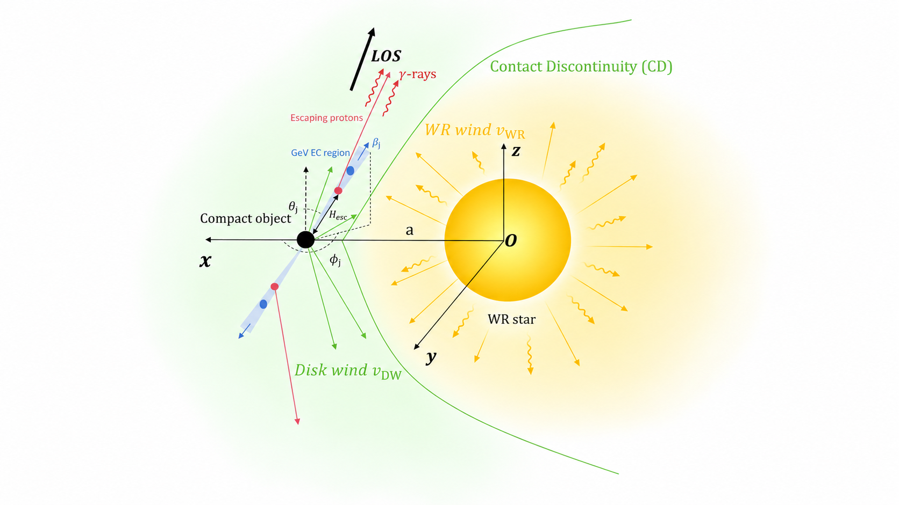
图注：双星—喷流几何示意图。GeV辐射在高度H_GeV产生，高能质子在有效高度H_esc释放，并与恒星光子及双星周围气体相互作用。沃尔夫–拉叶星风与盘风由接触间断面分隔。
怎么看这张图：先区分电子发光位置与质子逃逸位置；两者共享喷流方向，但不要求在同一点辐射。接触面决定沿质子路径的气体属于哪一种风。 解释跨能段共享几何与风靶场
来源与置信度：arXiv HTML；source verified；https://arxiv.org/html/2610.11881v1/sketch_copy.png
图2
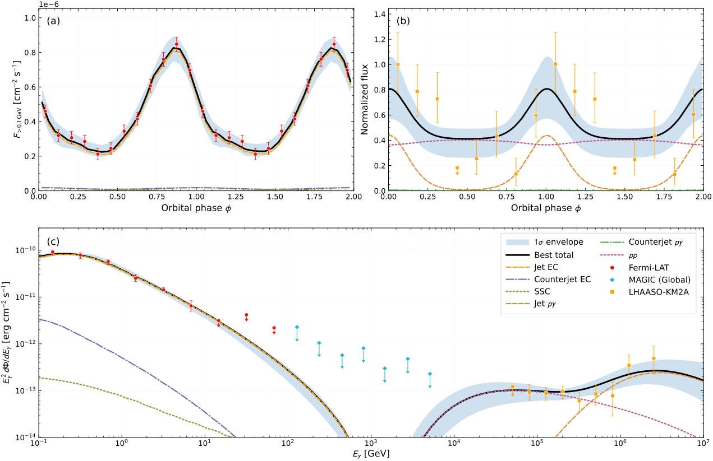
图注：Cyg X-3的GeV至PeV能谱及轨道调制联合拟合。黑色实线为总最佳模型，蓝色阴影为相应的一倍标准差统计不确定性。GeV部分的橙色虚线、紫色点划线和绿色点线分别表示喷流外部康普顿、反喷流外部康普顿及同步自康普顿分量；超高能部分的橙色虚线、绿色点划线和品红点线分别表示朝向我们的喷流质子的光强子分量、反喷流质子的光强子分量及总质子—核分量。(a) GeV轨道光变，红色圆点为LHAASO探测期间的LAT数据。(b) 超高能轨道光变，橙色方点为LHAASO数据，其归一化依Cao等固定为每平方厘米每秒1.053乘10的负15次方；这里包含恒星辐射场的光子—光子吸收，以及星际辐射场和宇宙微波背景导致的衰减。(c) GeV至PeV谱能量分布，红圆点和橙方点分别为LAT与LHAASO数据，青色菱形为MAGIC给出的上限；数据及模型均已校正微波背景与星际辐射场衰减。
怎么看这张图：比较(a)(b)峰值相位，再看(c)不同过程占优的能段。相同颜色在GeV与UHE部分表示不同过程，务必按图例辨认；蓝带未包含所有风几何系统误差。 同时展示四个观测约束及MAGIC上限
来源与置信度：arXiv HTML；source verified；https://arxiv.org/html/2610.11881v1/final_gev_pev_joint_figure.svg
强相关工作
直接观测依据是Cao等2026的LHAASO论文，参考文献7给出正式DOI 10.1093/nsr/nwag435。MAGIC与Fermi-LAT长期研究列为参考文献20，arXiv:2604.27671，并在图2提供上限。本文把这些结果作为外部数据输入，未新增一次独立PeV发现；同一数据上的多个理论模型不能累计成多个独立确认。
Zdziarski等2026（参考文献36，arXiv:2603.27805）强调反喷流的PeV贡献，Zhang等2026（参考文献38，arXiv:2604.04768）用同期GeV数据约束发射区。本文的新增联系是要求二者共享几何，并让盘风改变质子所见气体柱。作者的复现对照表明一种能解释UHE的既有几何未必解释GeV调制，这是部分数据上的模型竞争；本次已核验引用身份与本文对照过程，未把前作全部标为重新全文精读。
同一事件 / 同类源线索：
相似工作：
基础理论 / 方法工作：
相反观点 / 张力线索：
（未提供）
3. A morphological search for stable year-scale modulation in gamma-ray blazars
- 来源：arXiv / astro-ph.HE
- 链接：https://arxiv.org/abs/2610.12356
- 作者：Adithiya Dinesh, Alberto Domínguez, Alba Rico, Pablo Peñil, Marco Ajello, Sara Buson
- 公告 / 来源日期：2026-10-09
- 阅读层级：重点精读
- 评分：novelty 8/10，importance 8/10，relevance 10/10，final 9.70/10
- 推荐理由：120个LAT耀变体用红噪声及注入校准稳定调制发生率，试验后无确证，适合纠正QPO过度解读。
中文题目：耀变体的年尺度时钟有多可靠：用形态校准区分稳定调制、演化周期与红噪声
做了什么：作者分析18.1年的Fermi-LAT月光变，以奇异谱分析选择振荡模式和长期趋势，再在去趋势的实际光变上追踪加权小波脊线。120条满足采样要求的光变中，97条通过测量质量筛选；两源进入稳定、持续的Rank I，六源进入相干但不能证明周期稳定的Rank II。这个分级描述观测形态，不是周期发现的显著性。
一万条红噪声控制样本预计产生约1.3个Rank I和2.7个Rank II，对应实测2个和6个，单独各级均无显著超额。最强的PG 1553+113在120源试验校正后的误报概率约4.7%，B2 1215+30则约60%。更稳健的结果是发生率上限：在已分析的明亮、持续可测变源中，近正弦、约1–3年、振幅信噪比至少1的稳定调制占比不超过约7%（95%置信）；它不是双黑洞比例上限，也不约束超过周期窗口或强爆发型信号。
为什么重要：高能光变中的几个重复峰容易被解释成双黑洞，但红噪声、进动和阈值漏检都能造成类似形态。本文把持续性、周期漂移和抖动分开测量，再把测量过程本身放入注入—恢复实验。重要收获不是增加两颗已确认双黑洞，而是指出18年观测在要求三个有效周期后，实际只能给约3.1年以下信号作这种分级。
理论 / 观测 / 仪器方法价值：可直接迁移的是窗口和恢复率审计：边界被小波影响锥排除后，持续时间的分母也必须相应缩短；用于展示的平滑重构不能替代用于测量漂移的原始去趋势光变。作者展示了同一候选名单可以伴随截然不同的参数偏差，说明找回目标与正确测量物理量是两件事。
为什么应该关注：Mkn 421和Mkn 501是IACT长期监测重点，却分别位于演化候选和低相干残余级。分级差异并不证明两源有不同发动机：周期长度、可用周期数、低态漏检和红噪声都参与选择。多波段后续应优先检验相位相关能谱变化与跨波段持续性，并为各自采样重新校准，而不能照搬Fermi月光变的阈值。
展开详细解读：文章讲解、背景、理论、重点章节、图表与相关工作
文章详细讲解
科学问题。 年尺度准周期可能来自双黑洞轨道、喷流或吸积盘进动，也可能只是随机光变的偶然重复。作者问的是：能否定量描述候选的强度、寿命、长期漂移和短期抖动，并检验这些量是否真的响应不同物理行为。
作者怎么做。 从4FGL-DR2耀变体中取得1415条有变异性的LCR光变，经缺测率和连续缺口筛选留下120条。SSA只选择模式并去趋势；WWZ作用于去趋势观测值，在影响锥外追踪最强的连续活动脊线。每源做千次通量随机化，再用一万条红噪声和约两万条注入校准分类、偏差与完整度。
关键结果。 97条质量合格光变分成2、6、89源三个等级。PG 1553+113最值得后续，但全样本误报率仍为几个百分点；B2 1215+30靠近周期上限，红噪声很容易进入同一区域。稳定调制的发生率上限比某一候选的物理身份更稳健，而六个Rank II中只有三个漂移在作者的误差定义下得到较清楚分辨。
局限和下一步。 稳定进动也可进入Rank I；测量误差以恢复原周期的成功随机化为条件，不是已验证覆盖率的无条件区间。幂律红噪声若有转折，个源误报率可能上升。应增加观测基线、拟合每源随机过程、验证相位残差并结合相位能谱；本文没有确认任何双黑洞，也没有把高抖动组识别为等离子体驱动。
关键结果是怎么做出来的
第一步先读母样本。1415条变源月光变不是所有耀变体的随机抽样；要求TS至少4、缺测少于一半且最长连续缺口不超过三格，最终只有120条进入分析。97是测量质量合格数，发生率上限和控制样本预期的分母则是120，不能混用。
第二步看测量位置。SSA重构用于找到模式并展示，但真正的漂移与抖动从去趋势观测光变测出。若改在平滑重构上追脊，漂移被压小约3.4倍、抖动约44倍，虽仍找出相同两个Rank I，却会把演化信号错归为稳定。生产方案仍把注入抖动压小约4倍，因此测量阈值不能直接冒充本征物理振幅。
第三步核验稳定组。PG 1553+113周期2.11±0.01年、Q约10.2；B2 1215+30周期2.89±0.02年、Q约5.2。两者修正持续率均约1，但后者接近3.1年极限。一万条控制中110条进入Rank I，其中81条集中在2.5年至上限之间，说明边界会把噪声形态推向“持续时钟”。
第四步分开总体与个源。Rank I观察2例、背景预期1.32例，二项尾概率约0.381；Rank II为6对2.70，约0.055。合并两级得到约0.049也只是边缘超额，不能将两个级别重新包装成强发现。PG 1553+113达到其Q的控制只有4条，乘入120源搜索机会后误报约4.7%，而不是4/10000的局部概率。
第五步看注入。周期1.2–2.95年、振幅SNR为1的稳定正弦，Rank I完整度63%至97%；SNR为2时测试格点均恢复。含抖动族仍有约18%进入Rank I，所谓83%注入纯度只对指定注入族混合成立，不能赋给真实个源作稳定机制后验概率。重新施加通量检测阈值使稳定信号恢复率由92%降至57%，说明低态漏检本身会制造不稳定外观。
最后转为群体约束。2个观测与1.3个背景给出真实源数95%上限约5.4，除以120和最低完整度0.63得到约7%。更悲观漏检校准放宽到约8%。此结论只覆盖近正弦、亮且采样良好的变源及窗口内周期；高红移会拉长观测周期，故FSRQ与BL Lac的比例差异还混入时间膨胀和信噪比选择。
展开背景、理论、公式、模型和章节导读
背景知识
耀变体是喷流朝向观察者的活动星系核，多普勒增亮使小幅几何变化也能造成明显光变。一个重复峰序列可以是辐射源真正周期发亮，也可以是视角周期改变；仅看亮度重复不能决定是哪一种。
红噪声指低频变化功率较大的随机过程。有限的十几年资料只包含少数年尺度起伏，偶然出现相近峰间隔并不稀奇。搜过的源越多、周期越多，最像周期的偶然样本也越突出，因此局部功率与全样本误报概率不同。
奇异谱分析把时间序列嵌入滞后矩阵，再分解成趋势、振荡和噪声成分。它有利于发现候选模式，但重构天然平滑。若先抹平周期变化，再用重构证明周期稳定，会形成分析上的自我实现。本文用去趋势观测数据测量形态，正是为避免这一步。
小波在每个时刻只使用一定宽度的邻域，序列两端缺少一侧资料，称为影响锥。长周期的小波更宽，因而损失更多边界时间。本文的持续率修正回答“在可观测的时间中持续多久”，有效周期门槛则回答“确实观察到几个周期”，两者不能互相替代。
基础理论 / 方法脉络
四个量分别描述强度与周期数的累积Q、平均相对周期漂移epsilon、去除平滑漂移后的对数周期抖动，以及相对可测时间的持续率Pi。Q沿脊线积分的是局部振幅信噪比，不是逐周期相位锁定度；它大并不保证相位残差很小，更不是显著性的标准差数。
引力波主导的超大质量双黑洞轨道会缓慢收缩，代表参数下周期变化时间约七千年。18年资料无法测到这么小的漂移，因此“稳定”只表示没有超过约0.02每年的操作阈值。长期稳定的单黑洞进动也可通过，同一级无法唯一指定驱动机制。
进动周期对盘的翘曲半径很敏感，半径缓慢改变可以放大成可测周期漂移；螺旋运动结点沿膨胀喷流传播则在简化角动量守恒下偏向正漂移。全样本42个正漂移、55个负漂移，平均与零相容，未支持膨胀螺旋是总体主因，个别源仍可采用该解释。
分类阈值应由完整观测过程标定。抖动可来自真实周期不稳定，也可来自脊线在红噪声峰之间跳跃；高抖动组实测比例与红噪声控制相近。注入测试确定“什么能被量出来”，噪声控制确定“随机过程多常模仿它”，两项缺一都不能把形态图直接解释为物理机制图。
公式与推导
原文定义活动周期数，将每段时间除以局部周期后累积：
它是无量纲数，积分仅包括影响锥外且超过局部背景的最长连续活动段。强而很短的爆发可能有高功率，却仍积累不了足够周期。
强度统计量进一步乘入局部振幅信噪比：
S为WWZ功率，背景取多个数据驱动估计中最大者。这使Q相对其他背景处方更保守，但背景并非统计置信上界，Q也没有试验次数校正。
平均漂移是功率加权的相对周期变化：
若t以年计，epsilon单位为每年，符号保留增长或缩短。它是平滑脊线的测量量；注入表明中等漂移约被压小1.2倍，不能直接当作真实轨道衰减率。
抖动扣掉对数线性长期趋势后按周期数加权：
它量化剩余起伏，不等于注入随机游走的单步尺度。平滑、窗口和噪声共同决定响应，本文注入0.15的抖动仅测到约0.036。
观测总时长T允许的原始周期数为T/P，影响锥两端合计损失约2lambda个周期：
Morlet参数c=0.0125给出2lambda约2.85。Pi约1表示整个可用区间都有信号；它不是整个18年都有可测脊线，离散实现也允许略高于1。
由要求三个有效周期推得硬上限，而非另加经验周期切分：
这是18.1年与指定核共同产生的可辨识边界。原文个别注入叙述把3.0年与4.0年并称为上限外，和此近似公式的3.1年边界并不严格一致；这里采用公式并保留实际注入表格1.2–2.95年的校准范围，不将3.0年精确宣称为理论不可测。
由局部控制率到全样本至少一次误报，教学上可写为独立同率近似：
以4/10000代入得到约4.7%，解释PG 1553+113为何不能引用0.04%作为全局结果。源的噪声特性并不完全相同，作者也作了逐源控制检查，此式只展示试验因子的作用。
群体上限再除以检测完整度：
这里5.4来自包含背景的Feldman–Cousins区间，不是简单的观测数除完整度。结论约束的是指定振幅、周期、波形和入样群体的稳定调制，不是所有活动星系核中的双黑洞发生率。
模型拟合 / 应用方法
输入采用0.1–100 GeV、30天分箱光变，缺测只在SSA步骤插值，进入WWZ前重新遮罩。SSA窗口约为总点数40%，用本征值相近、周期一致和加权相关等条件选择振荡对或块，最终每源只留平均本征功率最大的一个模式。这可能漏掉同一源中并存的第二驱动。
WWZ在1–6年对数周期网格上计算，脊线限制在初始模式周期上下40%的固定窗口内，每步取最大功率再作短中值平滑。若活动区分段，只保留最长一段。该算法可在不同噪声结构间跳跃，既会产生测量抖动，也会压低真正的快速抖动；作者用同一流程处理控制和注入来量化这些效应。
每源一千次通量随机化传播测量误差，但只接受恢复周期落在原解20%内的成功实现。中心值仍为原数据解，16%与84%分位构成误差；质量筛选用平均半宽，分级用最大半宽的最不利界。这样的区间描述指定模式对通量误差的稳定性，尚未验证无条件覆盖率，不能称为完整参数后验。
一万条控制继承120条真实光变的采样、误差和缺测遮罩，采用对数正态通量与斜率1–2的幂律红噪声；能进入前两级的控制均进一步随机化。约两万条注入涵盖稳定、漂移、抖动及部分遮蔽信号。83%纯度对这些注入族和混合权重有条件依赖，不能移植成真实候选的物理概率。
稳健性检验揭示阈值敏感性：删除最后两个月，前两级核心成员保留，但另有三个源跨入Rank II，使其超额概率由0.055变得更小；降低TS门槛也改变母样本和等级数。作者没有据此挑选最显著版本。个源应再比较含谱转折的随机过程，群体推断则应报告采样与漏检完整度变化，保持与主分析分开。
重点章节 / 结果段落怎么读
第一步读§4.3及影响锥定义：把Q、漂移、抖动和持续率的积分域逐一对照，确认其含义不同，尤其不要把Q当作误报概率。
第二步读§4.4与附录A.4：记录误差重采样只保留找回同一模式的实现，区分条件测量区间与模式存在概率。
第三步将§5.4、表4与§5.5–5.7连读：前者回答红噪声会产生多少候选，后者回答真信号有多少会漏掉；只有两部分共同校准才能推发生率。
最后读§6.2、§6.5及附录B中的Mkn 501和PKS 2155-304：分别检查长周期越出窗口、低态丢失和非正弦形态的限制，避免把分类直接翻译成双黑洞身份。
关键图表与解读
图4
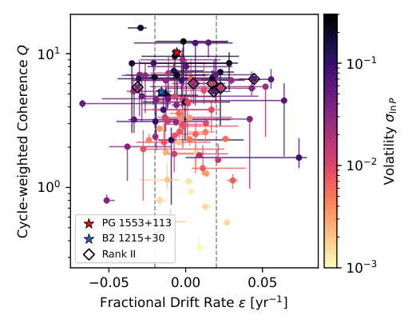
图注：机制图：周期加权相干度Q与带符号的相对漂移率epsilon，点的颜色表示抖动sigma_lnP。Q和色标均为对数刻度。竖直虚线标记每年0.02的稳定阈值；分类使用漂移绝对值加误差和抖动加误差的最不利界，因此判别信息同时分布在纵轴（相干度）、横轴（漂移）及颜色（抖动）中。误差棒来自通量随机化；PG 1553+113的横向误差棒小于标记。
怎么看这张图：结合Q定义与红噪声控制阅读，不能把等级当作显著性。 区分四项测量量与物理解释
来源与置信度：arXiv HTML；source verified；https://arxiv.org/html/2610.12356v1/fig3_mechanism_map.png
图5
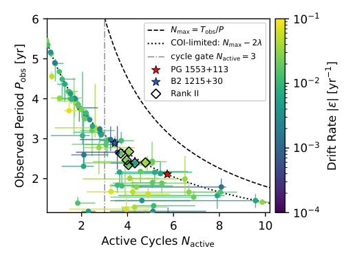
图注：持续性图：活动周期数N_active与观测周期P_obs。虚线表示约18年Fermi-LAT基线所容许的最大周期数N_max=\(T_obs/P_obs\)（\(T_obs=18\).1年）。点线表示排除影响锥后可观察到的最大值N_max−2lambda，其中2lambda=2.85（式16）；这是实际可达到的边界，位于其上的候选有Pi=1。点划竖线标记N_active=3的周期门槛。点的颜色表示漂移率绝对值。明显低于点线的源仅在部分可观测基线中能检出调制。误差棒来自通量随机化；PG 1553+113的误差棒小于标记。
怎么看这张图：点线而非虚线是持续率分母；三周期门槛给出硬周期上限。 揭示窗口选择效应
来源与置信度：arXiv HTML；source verified；https://arxiv.org/html/2610.12356v1/fig4_persistence_plane.png
图6
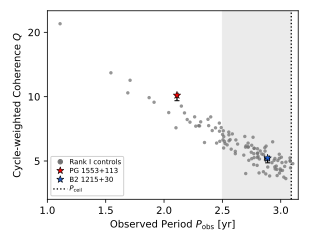
图注：在观测周期—周期加权相干度平面上，比较达到Rank I的红噪声控制（灰色，一万条中的110条）与两个Rank I观测源。阴影带为观测周期从2.5年至周期上限的区域，110条控制中81条位于其中；点线为式18给出的周期上限。只有4条控制达到PG 1553+113的相干度。
怎么看这张图：局部控制4/10000须计入120源搜索，得到约4.7%全局误报。 直接展示假阳性分布
来源与置信度：arXiv HTML；source verified；https://arxiv.org/html/2610.12356v1/fig_rank1_controls.svg
强相关工作
Foster（1996）的WWZ提供不规则采样时频工具；Vaughan（2005）强调红噪声下周期检验，属于方法基础而非本文的新结果。
Peñil等（2026a）对52个文献周期候选的多随机模型重分析提供独立显著性背景，结论与本文谨慎分级相容。Maldonado等（2608.00664）使用更细时间分箱的形态模板，对爆发型周期更敏感；两者差异提醒本文的近正弦发生率约束不能覆盖所有波形。以上关联依据本文§6.2和可核验参考文献条目，不把引文综述当作本次独立全文复现。
同一事件 / 同类源线索：
相似工作：
基础理论 / 方法工作：
相反观点 / 张力线索：
4. Disk Structure May Determine AGN Variability and Explain the Accretion Disk Size Problem: No Broad Line Region Required
- 来源：arXiv / astro-ph.HE
- 链接：https://arxiv.org/abs/2610.12462
- 作者：Amy Secunda, Yan-Fei Jiang, Jenny E. Greene
- 公告 / 来源日期：2026-10-09
- 阅读层级：重点精读
- 评分：novelty 8/10，importance 8/10，relevance 9/10，final 9.35/10
- 推荐理由：三维多频辐射MHD把盘厚度、遮蔽与内禀波动连到超光程时延，提供盘尺度问题的新动力学解释。
中文题目：AGN盘光变不只由X射线驱动：辐射磁流体模拟连接盘厚度、再处理与长时滞
做了什么：传统连续谱混响模型把AGN盘看作被变化X射线照亮的薄盘，不同半径的紫外、光学变化应高度相关，并只相差光行时。本文用三维辐射磁流体模拟检验这一图景：同一个一亿太阳质量黑洞的初始盘，在无照射及三档X射线亮度下演化约4500天，分别测量上下两侧、不同半径的出射光变。
较薄一侧在足够照射下接近传统混响；较厚、对流更强的一侧遮挡直接X射线，内盘再照射外盘并混入本征涨落，外侧时滞可达光行时的3–5倍，相关系数最低约0.2。模拟还出现与近光球层涨落传播相容的数十至数千天长时滞。它说明超长混响不一定全来自宽线区，却未排除真实AGN的宽线区贡献；更没有把模拟半径光变等同于真实滤光片观测，因而目前提供的是物理机制与待检验诊断。
为什么重要：盘尺寸通常由波段间时滞反推，若传播、重复再处理和本征变化参与其中，时滞就不再只是几何光程。本文将真实流体运动、辐射输运和可测光变放在同一计算中，展示相同半径范围内也能出现很不同的滞后。对Rubin等长期光变项目，这意味着盘结构推断需要同时使用相关性、功率谱和频率依赖时滞。
理论 / 观测 / 仪器方法价值：最有价值的是三级交叉检查：先测平均内流速度，再直接追踪密度涨落的径向传播，最后从光变独立提取长滞后。三个量在量级上相容，比只在互相关中找到第二个峰更有物理说服力。但作者同时展示两种时滞估计可以偏离，提醒模拟中已知有传播，也不等于观测反演能无偏恢复。
为什么应该关注：高能辐射与较低能辐射的相关程度经常被用于判断共同驱动。这里即使X射线照射始终存在，盘内几何、遮挡和本征湍流也会使相关性随半径或观测时段变化。对多波段研究，较弱相关不能直接等同于完全独立的能量来源，较长滞后也不能只换算成更大的盘半径。
展开详细解读：文章讲解、背景、理论、重点章节、图表与相关工作
文章详细讲解
科学问题。 真实AGN常见X射线与紫外相关较弱、连续谱滞后超过标准薄盘预测，以及不同季节结果变化。是否必须引入盘外宽线区，还是盘自身的垂直结构和流体涨落就足以产生这些现象，是本文的核心检验。
作者怎么做。 Athena++耦合理想磁流体与按角度离散的辐射输运，从已有灰辐射盘切换为1 keV上下两频组。四次演化共享初始盘和边界，改变外加X射线亮度；其时间波形均为功率谱斜率2的高斯随机实现。作者输出六个半径区间的上下表面光变，以功率谱、频率相干度、互相关和交叉谱相位分析。
关键结果。 盘的较薄一侧更容易由X射线直接驱动，较厚一侧的光变则混合遮挡、重复再处理、MRI和对流。没有宽线区的计算也得到超过光行时3–5倍的滞后。密度结构以约一千万至一亿厘米每秒向内或向外传播，对应光变中的长滞后，量级更接近近光球层内流而非极慢的中平面内流。
局限和下一步。 四组并非四个独立初始盘，上下不对称是单次湍流实现形成的状态，不能估计普遍发生率。固定日冕、两频组和窄方位角楔形限制了几何及光谱预测。下一步应扫描初始磁场、质量与吸积率，生成真正的多波段观测并注入采样和噪声，再评估盘厚度可被多准确地反演。
关键结果是怎么做出来的
先看无照射基准。即使没有外加X射线，盘仍在小时到年尺度变化，说明本征变化确由耦合流体与辐射演化产生。功率谱一般可用弯折幂律近似，低频斜率约0.3–1，比阻尼随机游走的平坦低频更陡；较厚一侧的弯折时间随半径增长更明显。
再看受照射的薄侧。高、中亮度运行中，多个半径光变与X射线高度相关，滞后接近光行时；薄侧总体各半径相关系数大于0.75。高照射增强快速的共同驱动，但最高频仍被盘输运平滑，中间频率又混入MRI本征变化。因此输出功率谱弯折不必对应输入X射线的弯折，输入在这里本来就是单幂律。
厚侧改变了因果路径。X射线先在内侧约100引力半径以内被吸收，内盘的再发射继续照亮外盘，每一步都能加入本地涨落并削弱原共同信号。外盘与X射线的相关可降至0.2，时滞增长到光行时的3–5倍；换用更接近外盘的参考半径，相关提高、滞后更接近局部光程，支持额外再处理而不是简单的整体半径放大。
再把光变切成短段。即使高亮度薄侧的十年总体符合传统混响，相邻100天也可表现为很好或很差的相关。图13的短窗误差范围很宽，意味着一个观测季的较大滞后未必代表长期平均盘结构已永久改变。约50天的稀有磁重联耀发还会污染测量，作者在短滞后测量时明确截去受耀发影响部分。
长滞后有独立动力学对照。图14的中平面内流约为光速的十万分之一，光球附近约千分之一；密度时空图显示相应速度量级的相干涨落。中照射厚侧有约负500至负2000天延迟，低照射还出现正长滞后，说明涨落并非只能随净吸积向内传播。符号取决于参考半径和传播方向，不能把所有长滞后都叫向内吸积时标。
最后核验观测推广。即使模拟无观测噪声、均匀采样，互相关长峰仍宽且低，傅里叶方法又可能受短正滞后混合而低估长负滞后。真实文献有约十亿厘米每秒的更快传播，本组参数难以解释。论文因此提供可行机制和联合诊断方向，没有对某个AGN作唯一模型拟合，也未消除宽线区、变化日冕等竞争解释。
展开背景、理论、公式、模型和章节导读
背景知识
AGN中心吸积盘的不同温度区域发出不同波段，较热内盘通常贡献更短波长。由于无法直接分辨多数盘面，观测用光变之间的时间差间接探测结构，这就是连续谱混响测绘。把时间差乘光速当作尺寸，隐含驱动和响应路径足够简单。
传统模型中的日冕发出X射线，盘吸收后再发出紫外或光学光子，外侧更晚响应。如果同一输入主导所有波段，光变应很相似。较弱相关既可能来自日冕变化，也可能来自盘局部加入了别的变化，单个互相关峰无法区分所有原因。
磁旋转不稳定性使差速旋转的磁化盘产生湍流并输运角动量；熵随高度的不稳定分布还可引起对流。两者可在盘内产生变化，并把较深层的变化搬运到光球。因而辐射表面看到的特征时标未必等于中平面净吸积时标。
本模拟的上下侧不是我们能同时看见的两个AGN。作者把它们分别视为近正面观测会看到的一侧，用同一个盘中的两种垂直结构作物理对照。上下差异由初始灰辐射演化随机产生，较长历史中还能改变，因此它是可能状态的展示而不是普遍固定结构。
基础理论 / 方法脉络
光变可概念性拆成输入X射线经过盘响应后的部分与盘本征变化。响应既有光程差，也有吸收、扩散与再次发射；本征部分则由MRI、对流和传播产生。当本征功率增加，即使输入仍真实驱动盘，线性相干度也会下降。
功率谱描述不同时间尺度上的变化强度；弯折频率可反映辐射输运或本征过程的特征时间，却不是唯一对应某一种热时标。本文把拟合弯折与中平面及MRI最强位置的扩散时间比较，发现两侧更接近不同高度的时标，这是一种结构诊断的候选关系。
互相关寻找把两条光变平移后最相似的时间差，交叉谱相位则给出各频率的滞后。若同时有短再处理和长传播信号，交叉谱是复振幅的叠加，最终相位不等于两个物理延迟的简单平均。两个估计方法一致只能增强可信度，不能保证已去掉混合偏差。
薄盘内流时间对厚径比的平方很敏感，厚盘能有更快传播。但观测发光来自近光球层，作者的速度剖面显示那里与中平面相差百倍。因此以光变长滞后估盘厚度时，还需知道发光高度、有效黏性和扰动速度是否等同于平均内流；这些退化尚未被本文完全解除。
公式与推导
用线性近似组织观测量，教学上可写：
x为日冕变化，Psi为半径R处响应，u为盘自身变化。这不是作者演化的替代方程，而是解释为何相同驱动下相关仍可降低；真实模拟直接解辐射磁流体。
原文式(2)拟合输出功率谱：
低频远小于f_b时斜率为负alpha_l，高频远大于f_b时为负alpha_h；弯折时间约1/\(f_b\)。阻尼随机游走是alpha_l=0、\(alpha_h\)=2的特例，模拟不被预先强制满足它。
原文式(3)由分箱交叉谱得到相干度：
它衡量输出能由输入线性预测的比例，先平均复交叉谱再取模。它与时域峰值相关系数不同，不能把两者数值直接混称同一指标。
若u与x不相关，以上教学模型给出：
本征功率P_u增大就降低相干度，即使X射线响应未消失。模拟中的本征与照射可能相互影响，故该式只说明机制，不用于从图中精确反演两部分功率。
原文式(5)将交叉谱相位变为频率相关延迟：
相位有周期性，低频格点少且多个响应混合时，长延迟会不精确。本文同时检查互相关次峰与参考光变自相关，避免把源自身宽峰直接解释成传播。
原文式(1)给出标准薄盘标度：
它来自内流速度约alpha(H/R)平方乘轨道速度，故增大盘厚度可大幅缩短时间。不能把这一单层标度直接套到有明显垂直速度结构的光球层而忽略alpha与发光高度。
观测长滞后的量级检查为：
这是把两个发光区与同一传播事件对应后的估计，正负滞后再区分方向。本文约一千万至一亿厘米每秒与近光球内流相容，但短长响应混合会偏置分母，不能视为精密测速。
作者使用光深与逃逸距离估计扩散相关时间，可写成有长度单位的形式：
光深无量纲、距离需恢复r_g，结果才有时间单位。这一近似帮助比较不同高度与功率谱弯折，不应泛称为任意盘区严格的热平衡弛豫时间。
模型拟合 / 应用方法
模拟中心质量一亿太阳质量，初始吸积率为爱丁顿率的几个百分点，计算楔形的球半径50–1000引力半径、方位宽0.39弧度。重点分析柱半径250以内已充分加密区域，最高径向分辨率约0.3%。有限方位范围和单个初始磁场环限制了大尺度结构的代表性。
X射线从柱半径10、高度正负30引力半径的轴对称环注入。高、中、低照射亮度分别为初始盘总亮度5、1、0.5倍，另有无注入灰辐射基准。三组共享斜率2的随机输入形状，仅改归一化，因而较容易隔离输入亮度影响，但不代表真实日冕的自洽形成演化。
光变在高度230–250引力半径收集向外径向与极向通量，分别处理上下盘面，输出节奏0.23天。六个柱半径发光区的黑体峰值约1300–5940埃；这只是温度对应波段，计算没有生成六个真实观测滤光片。作者明确承认真实混响涉及波长对多个半径的加权。
每条光变约4500天、无观测误差且均匀采样，拟合分箱功率谱的弯折幂律并检查拟合概率。短滞后取正负5天内互相关最大值，长滞后则检查20天以外新增峰和最低频交叉谱。存在耀发时先截去受污染区间，再用100至3000天不同窗口考察短窗散布，因而不同图的有效基线并非完全相同。
这里没有对真实AGN数据求出质量、盘厚度的后验，也没有给长峰统一的全局假阳性校准。主要验证来自模拟中已知的流体速度、密度轨迹和两种滞后估计的量级一致性。未来应将有限基线、噪声、滤光片混合和不规则采样全部前向建模，才能把物理可行性发展成可靠的参数推断工具。
重点章节 / 结果段落怎么读
先读§II.1：核对两个频率组、日冕环的位置和初始盘，区分真实演化变量与人为给定的外部照射。再读§II.2，明确光变是在六个半径上测量，黑体峰波长只是映射而非真正滤光片积分。
§III应与图1一起读：沿着光球、气体速度和辐射通量的方向理解上下不对称，而不是只比较两侧亮暗；留意图1不同面板并非全部来自同一时刻。
§IV.3–IV.4把盘结构接到短时再处理和长时传播，需比较直接追踪密度涨落与光变交叉谱的结果，不能只取一个最强相关峰。
最后读§V.2–V.3、§VI及附录A：核验为何宽线区仍是观测竞争解释、单初始条件怎样限制普适性，以及磁声传播速度为何不能直接解释当前测得的速度。
关键图表与解读
图1
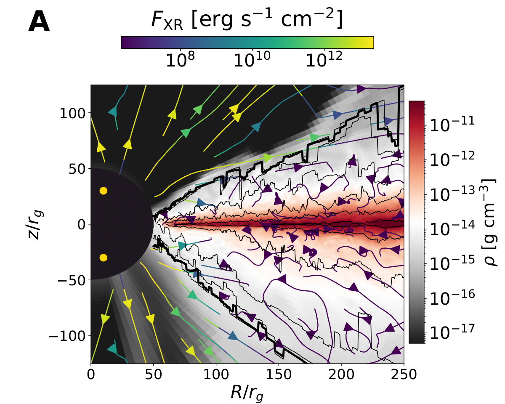
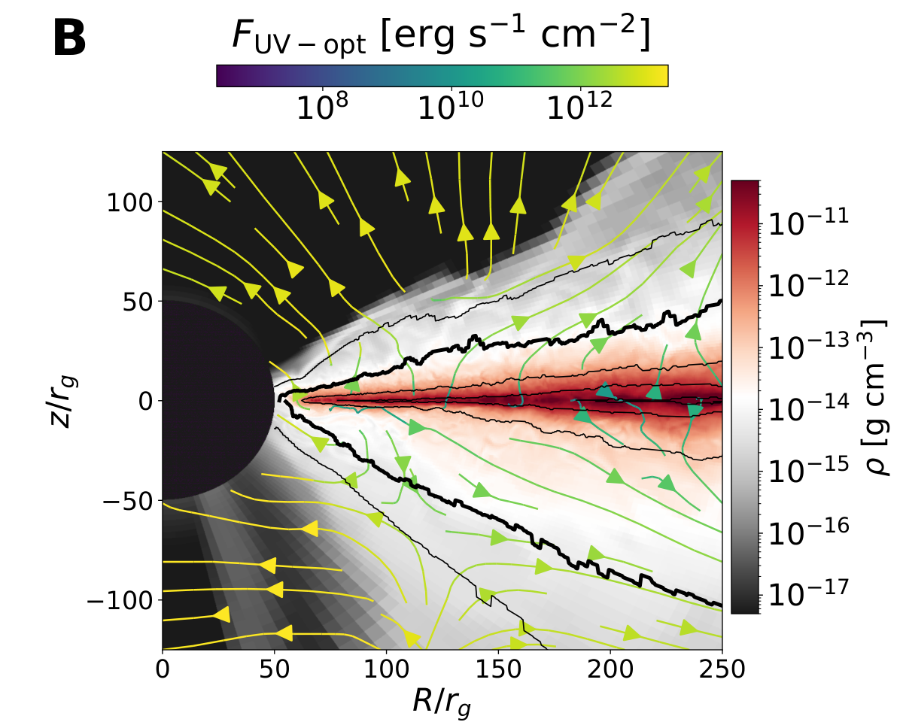
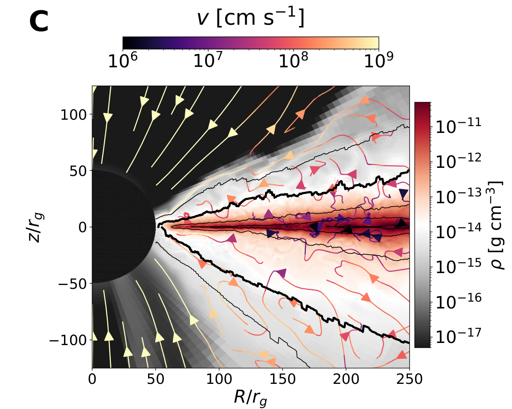
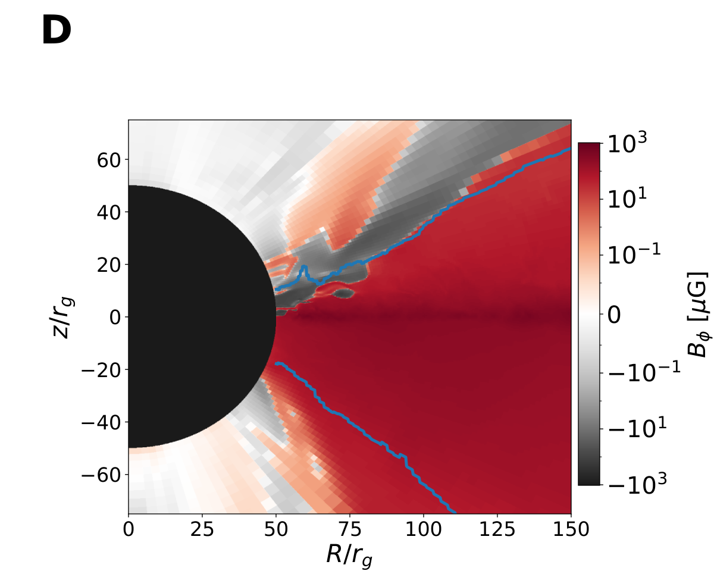
图注：A–C面板：高X射线运行在600天时刻的方位平均气体密度。流线分别表示方位平均的径向和极向X射线通量（A）、紫外—光学通量（B）及气体速度（C）。粗黑线在A中标记X射线光球，在B和C中标记紫外—光学光球；细黑线为光深每隔十倍递增的等值线。A中的黄圆标记轴对称X射线源的模拟位置，柱坐标为(10,±30)引力半径。中平面下方的盘密度下降更缓慢，使更多X射线被吸收，紫外—光学通量在光球附近随流体被平流输运。D面板：中X射线运行2950天时一个方位角切片的环向磁场。蓝线标记X射线光球；上侧光球附近发生强重联，使该时刻盘上侧发出的光变产生耀发（见图2左面板）。
怎么看这张图：A–C与D时刻和运行不同；前三面板解释遮挡及再处理。 展示机制的流体与辐射依据
来源与置信度：arXiv HTML；source verified；https://arxiv.org/html/2610.12462v1/xrrho.png；https://arxiv.org/html/2610.12462v1/uvrho.png；https://arxiv.org/html/2610.12462v1/velrho.png；https://arxiv.org/html/2610.12462v1/eb3_10.png
图14
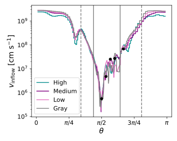
图注：四组模拟中，经过水平和时间平均的整体内流速度随极角theta的变化。竖直实线表示紫外—光学光球的平均位置，虚线表示X射线光球的平均位置。中平面theta=pi/2处内流很慢，约为光速的十万分之一；盘光球处则快得多，约为光速的千分之一。黑点标记图15和图16中极角切片的位置。图15、16中的传播速度以及图17–21的滞后对应速度大致为一千万至一亿厘米每秒，与近光球内流速度相符。
怎么看这张图：将各半径的相关峰位置与对应光行时对照：下侧外盘时滞增大且相关降低，说明遮挡和再处理改变响应。它仍是模拟环带光变，不能直接当成某个真实滤光片的观测盘尺寸。 连接垂直结构与长滞后
来源与置信度：arXiv HTML；source verified；https://arxiv.org/html/2610.12462v1/inspeed.svg
图19
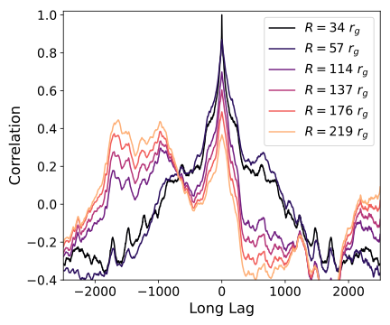
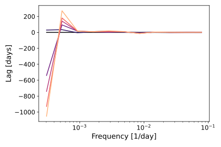
图注：中X射线运行中，盘下侧六个不同半径发出的光变相对于34引力半径处光变的长时滞。左面板为互相关滞后，右面板为傅里叶方法滞后。两种方法均支持约负500至负2000天的长滞后。滞后绝对时长大致随半径增大，在57引力半径光变中不存在。这些滞后给出的传播速度约为一千万厘米每秒。
怎么看这张图：两种测法支持相同量级，但宽峰与混合响应限制精度。 独立光变诊断检验传播
来源与置信度：arXiv HTML；source verified；https://arxiv.org/html/2610.12462v1/x30.svg；https://arxiv.org/html/2610.12462v1/x31.svg
强相关工作
初始盘直接承接Jiang等（2505.09671），先前局部辐射磁流体研究2311.10820及2025年ApJ 984,19建立照射强度与响应的关系；本工作增加可追踪径向传播的楔形区域。
Secunda等（2306.05455）讨论多个时滞混合导致偏差，为本次交叉谱限制提供背景。Kaul等（2506.11189）把温度涨落关联到磁声波；本文近光球传播更接近内流速度，磁声速度反而过快一至两数量级，属于需要进一步辨别的机制差异。Lewin等（2509.25315）的遮挡观测关联与本模型相容，但相容不等于排除宽线区贡献。
同一事件 / 同类源线索：
相似工作：
- https://arxiv.org/abs/2311.10820
- https://doi.org/10.3847/1538-4357/adc25b
- https://arxiv.org/abs/2509.25315
基础理论 / 方法工作：
相反观点 / 张力线索：
5. Evidence for orbital eccentricity supports a hierarchical origin for GW231123
- 来源：arXiv / astro-ph.HE
- 链接：https://arxiv.org/abs/2610.12205
- 作者：Baoxiang Wang, Tao Yang, Zhoujian Cao, Bin Hu, Xikai Shan, Rong-Gen Cai
- 公告 / 来源日期：2026-10-09
- 阅读层级：重点精读
- 评分：novelty 8/10，importance 8/10，relevance 8/10，final 9.00/10
- 推荐理由：GW231123低频偏心进动波形与注入检验改变自旋推断，分层并合解释有新证据但贝叶斯因子非发现显著性。
中文题目：GW231123的偏心轨道证据：低频信息如何改变次级黑洞自旋推断
做了什么：GW231123的信号质量很大、在探测器频带中只有少量可测周期，使质量、自旋和轨道动力学容易混淆。本文在同一套含自旋进动和高阶模的TEOBResumS–Dalí波形族中比较偏心与准圆轨道，使用经毛刺扣除的Hanford数据到11 Hz，Livingston主分析仍从20 Hz开始，并同时边缘化仪器校准误差。偏心率定义在5.5 Hz的波形参考频率，得到0.34，上下90%可信误差分别为0.12与0.23；偏心相对准圆模型的贝叶斯因子为10.2。
允许偏心后，次级黑洞自旋中位数由约0.90降到0.74，且分布显著变宽；主黑洞仍偏向高自旋。零噪声注入—恢复重现了这种差别，也显示仅从20 Hz分析会削弱偏心信息。结果使次级黑洞由更早一次并合形成的解释更自然，但不等于已经证明分层并合：贝叶斯因子是给定波形与先验下的相对支持，注入是事件特定的自洽检验，不能代替不同波形家族和噪声总体的独立校准。
为什么重要：少数极端引力波事件可能决定黑洞质量谱边界，因此波形假设的影响会从单事件传到星体形成理论。本文指出，遗漏偏心结构可能由自旋参数补偿，并且这种补偿在两颗黑洞上并不对称。它改变了次级黑洞的质量—自旋解释，而不是把两颗都变成同一种典型并合遗迹。对偶不稳定质量缺口的上边界也因此需要谨慎：若该对象本来就是并合产物，它不能单独定义普通恒星坍缩允许的最高或最低质量。
理论 / 观测 / 仪器方法价值：可借鉴的是对照设计：偏心和准圆模型共享波形族、进动、高阶模、共同参数先验与校准处理，只增加轨道自由度；再用同一注入信号比较两种频带，检查信息损失如何改变后验。该设计能减少把代码或先验差异误认成物理差异的风险。不过注入来自真实数据的最大似然配置，并在零噪声下恢复，适合展示机制，不能单独给出整类事件的误判率。
为什么应该关注：高能天文和多信使研究常用黑洞质量、自旋推断形成环境，本文提醒这些参数不是脱离波形模型的直接观测量。对短而高质量的并合，低频数据质量与轨道假设可影响是否需要致密星团或AGN盘中的重复并合。当前最值得关注的是独立波形在同样低频配置下的结果，以及噪声、偏心先验和校准变化能否保留次级自旋下移，而不是把一个接近0.7的中位数当作形成通道的身份证。
展开详细解读：文章讲解、背景、理论、重点章节、图表与相关工作
文章详细讲解
科学问题。 普通双星长时间辐射引力波会趋于圆化，动力学捕获或多体作用则可能留下可测偏心。GW231123质量大、带内周期少，偏心造成的振幅相位变化可能与自旋进动和近并合波形结构混淆。问题是此前异常高的自旋是否完全属于源本身，还是部分来自把轨道限制为准圆的建模假设。
作者怎么做。 两个假设均使用含进动和四阶以内可用高阶模的同一波形。主分析采用H1的11–448 Hz与L1的20–448 Hz，波形从5.5 Hz启动以保留高阶模进入似然频带的贡献。作者在相同共享先验下计算贝叶斯证据和后验，并对仪器幅相校准作联合采样。随后用同一个偏心注入分别在低频扩展和20 Hz起始配置下恢复。
关键结果。 主分析相对支持偏心，贝叶斯因子10.2；只从20 Hz分析时，10 Hz参考偏心率为0.12，90%区间仍有大量接近零的支持。次级自旋由准圆模型的0.90变为偏心模型的0.74，但其90%区间很宽；主黑洞自旋变化小。注入在准圆恢复下也把次级自旋向上推约0.17，而主自旋只约0.02，说明遗漏轨道结构确有产生这种不对称偏差的能力。
局限和下一步。 零噪声注入验证“偏心信号能够造成这种行为”，不证明真实信号必然偏心，也不是噪声误报率测量。证据值依赖偏心先验、波形近并合准确度以及低频噪声建模。引入点质量透镜后偏心结果大致保留，但透镜参数仍接近先验，不能宣称检出透镜。需要跨波形、跨噪声实现和多事件群体分析，才能把这一事件的相对支持发展为形成通道的稳健统计结论。
关键结果是怎么做出来的
先检查实际用到哪台探测器的低频信息。标题式的“11–448 Hz分析”是简写：H1使用公开的BayesWave毛刺扣除数据到11 Hz，L1因10–20 Hz毛刺而保守地从20 Hz开始。每台取触发前6秒到后2秒、1024 Hz采样。作者也把L1延至11 Hz作检查，结果近似相同，但主结果并未依赖这一更激进选择。
其次控制模型比较。偏心模型新增偏心率和平均近点角，准圆模型把偏心固定为零；两者都含进动与相同高阶模，不能将结果描述成偏心波形击败一个不含进动的简单模板。相同参数先验和相同校准处理使贝叶斯因子较有可比性，但新增参数的先验体积仍进入证据积分。
然后读两种频带后验。图1的5.5 Hz参考偏心率中位数0.34，90%区间约0.11至0.46；图2改用10 Hz参考且两台均从20 Hz计算似然，得到约0.01至0.39的宽区间。两个偏心率在不同参考频率定义，不能直接相减称为参数冲突。偏心随演化减小且低频信息被删去，两者共同解释了较高频分析更接近准圆边界。
注入检验使用低频偏心分析最大似然配置，注入偏心率0.30。低频恢复给出0.37，上下90%误差0.09和0.14；同一信号在20 Hz起始分析得到10 Hz参考偏心率0.14，上下误差0.24和0.12。相近行为说明频带删减可以遮蔽偏心，而不必假设特殊噪声来制造它；但因为注入和恢复共享模型且无随机噪声，这不是对波形误差或假阳性总体的完整压力测试。
质量—自旋联合图提供形成解释所需的第二条信息。次级质量仍与参考质量缺口范围重叠，偏心模型允许接近典型低初始自旋、可比质量并合遗迹的约0.7自旋。主黑洞却保持高自旋，质量也延伸到缺口上方。作者进一步用排除本事件后得到的缺口下边界和5%引力波质量损失作简单二代质量预算，次级与该预算相容的后验比例相对准圆约增加2.2倍；这个比例比不是形成通道的贝叶斯因子。
最后看替代效应与结论范围。允许孤立点质量微透镜后，偏心率约0.32，相对准圆的对数贝叶斯因子约2.27，与不含透镜时2.32接近。透镜质量和位置宽而近先验，说明它们没有独立受到强约束。该稳健性检查只覆盖特定透镜族，并不消除其他波形系统误差。
展开背景、理论、公式、模型和章节导读
背景知识
引力波从双黑洞的轨道运动中抽走能量和角动量，频率逐渐升高，最终并合并振铃。对于质量较大的系统，整个过程在探测器敏感频带内更短，因此少量低频周期可能携带关键的轨道信息。把分析下限从20 Hz降低到11 Hz，不是简单增加一段相同的信息，而可能增加辨别非圆轨道所需的相位结构。
偏心率衡量轨道偏离圆形的程度，但在相对论双星波形中必须连同参考频率和波形约定报告。一个系统在较低频率有较大偏心，演化到更高频率后可能更接近圆形。本文的5.5 Hz是波形参考与起始频率，并非说探测器似然使用了5.5 Hz的数据；这两个频率角色必须分开。
自旋进动也会调制波形。信号周期少时，不同物理效应可能用相似方式改善拟合，导致某些参数吸收模型遗漏的结构。偏心模型下次级自旋中位数降低，意味着先前的高自旋解释不是唯一分配方式；其分布同时变宽，因此不能把中位数改变当作测量精度提高。
对偶不稳定会限制某些恒星坍缩形成黑洞的质量，但“缺口”边界依赖恒星物理和种群推断。先前黑洞并合留下的遗迹可以落在普通坍缩不易产生的质量区，再次参与并合，称为分层并合。约0.7的自旋是某些可比质量、低初始自旋并合的典型结果，不适用于所有前身参数，更不是对每个二代黑洞的精确预测。
基础理论 / 方法脉络
本文推断从探测器应变数据开始，波形需投影到各台仪器并包含校准响应。残差在噪声功率谱加权下计算：噪声较大的频率对拟合贡献较小。增加低频数据只有在噪声和非平稳伪迹处理可靠时才有收益，否则可能把仪器结构误当轨道结构。
贝叶斯后验把似然与先验结合，用于描述给定模型下哪些参数更受支持；证据则把似然在整个先验空间积分，用于比较模型。一个复杂模型即使最大似然更高，也可能因只在很小参数体积内拟合好而受到证据惩罚。因此贝叶斯因子10.2不能直接转换成若干标准差，也不能在未给模型先验概率时称为偏心概率约91%。
频带检验同时涉及物理演化和信息删减。较低频的偏心特征更强，而高阶模的频率高于主导模，所以波形需从较低主模参考频率开始生成，才能保留进入似然区间的高阶辐射。本文明确用同一波形族和同样高阶模控制这一点，避免把模式缺失误认成偏心优势。
形成通道推断比波形参数推断多一层假设。先要从距离与宇宙学将探测器系质量转到源系，再与恒星缺口、并合遗迹质量损失和自旋分布比较。本文的简单二代质量预算只是条件一致性判据；要得到不同环境的真实形成概率，还需各通道的质量、自旋、偏心分布、选择效应与先验发生率。
公式与推导
原文方法式(4)定义每台仪器的噪声加权内积：
S是单边应变噪声功率谱，积分上下限因探测器而异。低频数据是否贡献有效信息，要看波形残差相对于该处噪声的大小，不能仅数增加了多少频率格点。
假定各台噪声独立且平稳高斯，原文式(3)给出：
d是数据、h是包含仪器投影及校准的波形，C为与源参数无关的常数。毛刺扣除和PSD检查是使此似然可用的重要前提，不是该式自己能保证的性质。
原文式(1)连接似然与后验：
H为轨道假设，pi为先验。本文偏心率在零至0.5均匀分布，平均近点角在完整周期均匀分布；后验偏离先验的程度反映数据新增了多少约束。
归一化常数也是原文式(2)的模型证据：
这是在先验空间的平均拟合能力，不等于最佳拟合似然。偏心先验范围若改变，证据可能变化；因此本文结果要连同先验约定一起引用。
模型比较使用原文式(5)：
指数化约为10.2，只说明两个指定模型下的数据相对支持。没有经噪声总体和搜索试验校准，就不能把它当作频率学全局显著性。
源系质量由原文式(6)换算：
红移通过光度距离和采用的Planck15宇宙学推得。因而质量缺口比较同时继承距离和宇宙学假设，不应直接把探测器系质量放入恒星演化质量边界。
原文讨论给出简单二代遗迹的质量预算：
两颗一代黑洞均低于缺口下沿时，总质量扣去引力波辐射损失形成这个上限。它忽略更复杂先前历史，且下沿本身有后验分布；本文对该分布边缘化，而非把43.44太阳质量视为没有误差的常数。
把这一预算与事件后验连接，可以用下式教学表示作者的相容比例：
指示函数只判断质量是否容许简单二代来源。偏心与准圆下次级比例之比约2.2，并不是“分层并合比其他形成更可能2.2倍”；后者还需完整形成模型、选择效应和通道先验。
模型拟合 / 应用方法
每台仪器使用8秒应变，H1采用公开毛刺扣除版本，L1采用原应变但主分析排除20 Hz以下。噪声谱以源外数据的中位Welch估计，作者又自行构造延至11 Hz的BayesWave/BayesLine谱作稳健性检查，并在共同20–448 Hz范围与官方谱比较。正式结果以Welch谱为主，不能写成直接使用官方11 Hz噪声谱。
波形使用TEOBResumS–Dalí中可用的四阶以内模式。共享先验包括探测器系啁啾质量70至220太阳质量、质量比0.2至1、自旋幅度0至0.99及各向同性方向；距离先验按源系时间、共动体积内恒定并合率，并限制在300至8000 Mpc。偏心与准圆仅在轨道自由度上不同，有利于隔离轨道假设，但不能覆盖其他波形家族的误差。
推断采用Bilby与dynesty，生产运行2000个活动点，acceptance-walk的naccept为60。真实数据的幅相校准以每台10个三次样条节点处理，先验来自公开校准不确定性，并与源参数同时采样。后验区间默认是中位数与90%可信区间，图中50%和90%区域也属于后验概率口径。
模型诊断主要是频带替换、PSD替换、L1低频扩展以及零噪声注入—恢复。注入使用同一最大似然偏心配置而非广泛抽样的一群源，所以它是事件针对性的机制验证。把它称为“无毛刺仍可重现”是合适的，把它称为“已排除所有毛刺或噪声伪偏心”则超出证据。
附加点质量透镜把频域波形乘以波光学放大因子，并联合采样透镜与源参数。偏心结果稳定、透镜参数近先验，说明在这个扩展内没有强烈相互替代；不代表其他传播效应都已排除。下一轮复现最有价值的是在共同数据和先验下跨波形族比较，并对偏心先验和多噪声注入做独立敏感性预算。
重点章节 / 结果段落怎么读
- Methods的Detector data先厘清H1与L1不同下限，以及5.5 Hz参考频率不等于似然起点。
- Results前两小节对照图1、2，分别读清偏心定义和90%区间，不能跨参考频率直接比较数值。
- Injection–recovery与图3检查轨道遗漏如何作用于次级自旋，再用图4确认主自旋的不同响应。
- Bayesian inference核对共享先验、证据定义与校准处理，区分后验可信区间、模型支持和发现显著性。
- Discussion阅读透镜扩展与二代质量预算，明确它们提供条件一致性，尚未给出完整形成通道概率。
关键图表与解读
图1
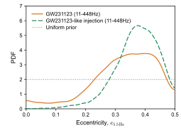
图注：GW231123在11–448 Hz分析配置中的偏心率。图示真实事件与类GW231123偏心注入恢复的5.5 Hz参考偏心率边缘后验；二者均采用该低频分析配置。水平点线是共同的均匀先验密度。真实事件得到0.34，上下90%可信误差为0.12和0.23；注入恢复得到0.37，上下误差为0.09和0.14。
怎么看这张图：后验相对先验偏向非零，但这是给定波形和先验的约束。注入恢复是一种自洽对照，不能当成第二个独立事件；该配置主分析的L1仍从20 Hz开始。 展示核心偏心证据与注入对照
来源与置信度：arXiv HTML；source verified；https://arxiv.org/html/2610.12205v1/Fig1.svg
图3
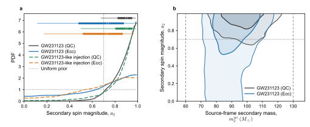
图注：GW231123与注入恢复的次级自旋推断。QC与Ecc分别表示准圆与偏心假设，两面板均来自11–448 Hz分析配置。(a) 次级无量纲自旋幅度的边缘后验：黑、蓝实线为真实事件在准圆、偏心假设下的结果，绿、橙虚线为同一偏心注入在准圆、偏心模型下的恢复。粗、细横条分别为50%和90%可信区间，圆点为中位数；水平点线为均匀先验密度，竖直点线标出自旋0.7。(b) 真实事件源系次级质量与次级自旋的联合后验，黑、蓝实线分别对应准圆、偏心；内、外围线包围50%和90%最高后验密度区域。质量60和130太阳质量的竖直虚线标出参考对偶不稳定质量缺口边界，水平点线标出自旋0.7。
怎么看这张图：允许偏心后次级自旋中位数下降且区间变宽。质量缺口和0.7线是参考尺度，落在附近并不唯一证明分层并合；主黑洞响应应另看图4。 展示形成解释依赖的质量自旋联合变化
来源与置信度：arXiv HTML；source verified；https://arxiv.org/html/2610.12205v1/Fig3.svg
强相关工作
原始事件观测是LVK的GW231123发现论文（参考文献1，arXiv:2507.08219）。本文复用该事件公开数据，并在不同低频与轨道假设下重新估计参数，因此不是新的独立引力波事件。Jan等的偏心和波形系统误差研究（参考文献9，arXiv:2512.20060）以及另一进动偏心波形工作（参考文献18，arXiv:2609.01568）在20 Hz起始分析中给出近准圆边界的支持，本文称其高频结果与之相容；分歧重点在保留低频后的信息和模型条件。
Tong等的质量缺口种群研究（参考文献4，arXiv:2509.04151）为本文简单二代质量预算提供排除本事件后的下边界后验。本文不是推翻恒星对偶不稳定机制，而是提醒一个可能的并合遗迹不能直接作为普通坍缩质量上边界。参考文献29、30分别提供非圆和非平面有效单体波形基础（arXiv:2404.05288、2404.15408）；此处关系与标识已由实际参考文献核验，前作并未在本次全部重新全文审读。
同一事件 / 同类源线索：
相似工作：
基础理论 / 方法工作：
相反观点 / 张力线索：
（未提供）
6. A Coherent Harmonic Summing Pulsar Search Code
- 来源：arXiv / astro-ph.HE
- 链接：https://arxiv.org/abs/2610.11749
- 作者：Scott M. Ransom
- 公告 / 来源日期：2026-10-09
- 阅读层级：重点精读
- 评分：novelty 8/10，importance 8/10，relevance 8/10，final 9.00/10
- 推荐理由：相位相干谐波搜索及86万注入在相同误报下提高检出并给出算力比较，需核查红噪声和适用边界。
中文题目：保留谐波相位的脉冲星盲搜：相干傅里叶折叠如何提高同误报率下的恢复率
做了什么：CoherentSearch.jl从一次长FFT出发，插值各试探频率的复谐波振幅，保留相位并反变换为短脉冲轮廓，再用不同宽度箱形模板搜索。相比传统只加谐波功率，它能利用脉冲形状；相比逐频率时域折叠，它复用同一谐波组，降低额外运算。输入须经过局部白化，轮廓和模板噪声方差按实际填入的谐波精确计算。
在约87万个人工脉冲注入、每次观测平均0.1个误报的统一标准下，默认搜索对白噪声样本恢复76.3%，riptide推荐配置为64.5%，16谐波且不搜加速度的accelsearch为41.6%。单线程相干搜索约10.8秒，比推荐FFA快约3.2倍，却仍比accelsearch慢约14倍。优势取决于阈值校准与脉宽；极窄脉冲需更深谐波搜索。红噪声测试没有包含射频干扰或完整双星加速度搜索，因此这些恢复率不是实际巡天的新脉冲星产量预测。
为什么重要：窄脉冲的大部分信息位于高次谐波，丢掉相位既损失形状，也使窄脉冲难以有效匹配。本文展示已有FFT流水线可增加接近折叠灵敏度的一层搜索，并将噪声归一化与缺失谐波修正作为算法核心。它特别强调公平比较应固定经验误报率，而非给所有软件相同的“信噪比8”门槛。
理论 / 观测 / 仪器方法价值：值得借鉴的是对优化的逐层验证：Python参考、未优化Julia、生产CPU和GPU路径相互对照，噪声方差再用大量模拟验证。更关键的科学对照是给FFA同样白化后的数据，使红噪声下的差异能归因于预处理或搜索本身，而不是把一个默认去趋势配置的失败泛化成整个FFA算法失败。
为什么应该关注：高能与多信使研究需要可靠的脉冲星样本，也常面临低占空比周期信号搜索。这里的收益来自已知噪声尺度、相位利用和模板试验校准的组合，适合为周期搜索方法提供参照。不过光子事件数据、缺测光变或加速双星不能直接套用均匀采样、固定频率版本，迁移前要重建输入模型和误报校准。
展开详细解读：文章讲解、背景、理论、重点章节、图表与相关工作
文章详细讲解
科学问题。 传统FFT盲搜很快，但不相干谐波求和抛弃了相位；FFA保留轮廓却可能更费时。能否从一个长FFT重建各频率的轮廓，并在同误报预算下获得更好的灵敏度与成本折中，是本文的目标。
作者怎么做。 对白化FFT用复sinc插值求60个谐波，作120格实反变换；再抽取每第2至6个谐波，复用为更高基频和更浅轮廓。每个轮廓扫描箱形脉宽和相位，噪声方差按带限相关性及奈奎斯特缺失谐波计算。作者用配对噪声、真实脉宽分布驱动的大规模注入，与多个FFA配置和传统FFT比较。
关键结果。 默认方案白噪声恢复76.3%，推荐FFA为64.5%，传统16谐波FFT为41.6%；同误报率下推荐FFA的差距主要来自相干搜索能使用更低的阈值。低于0.5%占空比时，深FFA胜过默认方案，额外低频120谐波搜索才补回这部分。
局限和下一步。 结果对注入亮度、脉宽分布、模板族和噪声类型有条件依赖；没有包含射频干扰、完整色散搜索成本或紧双星的频率漂移。真实资料测试确认可运行与速度，不等于大规模真实巡天完整度验证。下一步应在实际干扰和加速度校正后做注入、误报和总体成本评估。
关键结果是怎么做出来的
先识别对照条件。accelsearch使用16谐波、无加速度搜索；rseek有A、B、C三种配置，C遵循推荐的窄折叠格数区间，B对慢源折到约千格。prepfold被直接告知真实周期，因此99.4%的恢复率是已知周期理想参照，不是与盲搜等价的竞争结果。
再看匹配误报。白噪声下达到每次观测0.1误报所需阈值分别约6.75、7.20及7.55–7.65，不应统一设成同一数字。若强行将相干搜索提高到推荐FFA阈值，其恢复率降为61.6%，反低于FFA的64.5%；这说明对推荐配置的总体收益主要来自更稳定、尾部更轻的噪声统计，而非所有脉形都恢复了更多信号。
脉宽决定谐波深度。默认60谐波对小于0.5%占空比恢复46.7%，深FFA为61.1%。增加仅覆盖5 Hz以下的120谐波一遍后，联合搜索对最窄组恢复66.2%，且联合候选重新校准阈值以支付新增试验代价。不能把两次搜索的最佳恢复简单相加而维持原阈值。
红噪声结果必须拆开预处理。riptide默认4秒运行中值去趋势无法去掉较高拐点频率的漂移，候选会被慢频噪声淹没。将同样白化FFT反变换给FFA并关闭重复中值过滤后，两法随红噪声加剧损失的相对灵敏度相近，最强噪声约保留较弱噪声时63%。这证明默认配置崩溃不是FFA数学原理本身的缺陷。
速度对照在同一空闲机器、同49条模拟、单线程顺序测量。默认相干搜索10.8秒，推荐FFA约3.2倍更慢，深FFA约7.3倍；传统accelsearch则14倍更快。图5不包含两种傅里叶搜索共用的不到1秒FFT与归一化，也不代表完整色散试探流水线耗时。GPU表格比较的是整台20核CPU，而不是单核，硬件型号也必须随加速比报告。
统计细节决定可推广程度。注入周期、脉宽和亮度分布接近门槛，窄脉冲过采样后有重要性加权，结果不是所有天区源数比例。按噪声拐点与自转频带分别分配0.1误报时，总预算扩大为七个频带各0.1，不能与每观测0.1的第一组数字直接比较。部分未白化FFA结果有偶然频率匹配，作者明确不把这些格点当作真实灵敏度。
展开背景、理论、公式、模型和章节导读
背景知识
脉冲星每转一周只在很短的相位窗口发亮，称为低占空比。窄脉冲的傅里叶表示需要很多谐波，高次谐波不仅有功率，还以确定相位关系共同拼出峰形。只求功率和能确认某些频率有能量，却不能充分利用它们是否组成一个窄脉冲。
折叠是在一个试探周期下将长时间序列叠到短轮廓中。周期正确时脉冲同相累积，噪声部分平均掉；盲搜不知道周期，需要很多试探。FFA复用中间和来加速，本文则利用一次长FFT已经编码的全部频率信息重建短轮廓。
FFT只给离散频率格点，真实周期一般落在两格之间。如果直接拿最近的格点，各谐波的振幅和相位都会不准确，窄峰尤其受损。复数傅里叶插值同时保留幅度与相位，基频网格还要足够细，使最高谐波也不偏离太远。
真实射电时间序列有增益漂移、低频红噪声和射频干扰。本文用局部频谱白化处理前者，使各频率噪声功率尺度可知；白化也可能衰减慢源的信号，因此不是无代价清理。射频干扰未进入主要注入实验，实际巡天还必须另行评估。
基础理论 / 方法脉络
相干谐波求和的实质是保留复振幅，用反变换让各谐波按正确相位干涉形成轮廓。其优势并不是每个候选都得到更大的数值信噪比，而是模板更贴近脉冲形态且统计尺度可校准，在同误报率下容许更合适的阈值。
默认60谐波对应120相位格，最窄可良好表示的脉冲宽度约为百分之一周期。宽脉冲高阶谐波几乎只有噪声，所以同时做浅折叠有益；窄脉冲则需更深折叠。抽取谐波形成多层轮廓，在不重复昂贵插值的前提下兼顾这些脉宽。
轮廓的零频项固定为零，所以均值严格为零；但轮廓是带限随机信号，相邻格的噪声并不独立。若用独立格的箱形方差，浅轮廓或奈奎斯特截断轮廓可能被虚增显著性。精确计算模板在各谐波上的权重，才能使各搜索深度使用可比尺度。
单个固定模板的归一化统计量在理想白噪声下可近似标准高斯，但搜索取多个相位、脉宽、频率和深度的最大值，最终尾概率包含大量相关试验。论文的经验阈值由完整注入与候选流程测量，不能把6.75直接写成整个巡天的6.75标准差发现。
公式与推导
试探频率用无量纲傅里叶坐标表示：
T为观测时长，H为谐波数。基频每步只移动1/(2H)格，使最高谐波每步移动半格，控制窄脉冲的相位失配。
原文式(2)用邻近m个复FFT系数插值：
指数项保留频率偏移带来的相位，不能只插值功率。有限窗口省略sinc尾部，默认m=16平均损失约1.3%信号功率，增加窗口可减小损失但耗时增长。
谐波抽取复用已经算好的系数：
它对应基频kr和2H_k格轮廓，没有新插值成本。默认k从1至6，得到120、60、40、30、24、20格；较浅层适合宽峰，但各层噪声尺度必须分别正确归一。
若FFT噪声平均功率为1，原文式(1)给出未归一反变换每格噪声：
低于轮廓奈奎斯特的复谐波和奈奎斯特实项权重不同；超过数据奈奎斯特而填零的谐波不含噪声，不能计入实际填充数。
一般零均值箱形模板统计量为原文式(3)：
S_w为相位p起的w格总和，S_tot为全轮廓和。本算法后者为零，但分母的独立格近似还不足够，生产算法使用下一式修正。
箱形在第j谐波的响应及其精确方差为原文式(4)：
末项只在该奈奎斯特谐波实际填入时存在。最终用sqrt(\(V_w\))归一箱形和，直接计入带限轮廓的相关噪声，避免浅折叠和缺失高谐波获得不真实优势。
插值截断的偏移依赖损失近似为：
信号和噪声同时受截断，不能把功率损失直接当作同百分比信噪比损失。该近似针对插值窗口，和有限H造成的脉形截断是两种不同误差。
完整搜索的比较标准是经验误报预算：
这是根据未匹配注入的候选计数选择阈值的教学写法。若把预算分别分给七个频带，整体预算就改变；这正是表1两组恢复率不能直接放到同一标尺上的原因。
模型拟合 / 应用方法
模拟每条2的24次方个样本，采样60微秒，总长约1006秒。总体160976条观测、869574个注入，其中约41万个白噪声与红噪声注入配对。所有软件分析相同数据；推荐FFA和额外白化FFA在明确子样本上运行，相干算法在对应子样本与总体差异小于0.3个百分点。
慢源周期20毫秒至5秒按对数分布，占三分之二；毫秒源另取截断高斯周期与较宽占空比。慢源脉宽及翼部依据MeerKAT的1176源测量抽样，极窄组过采样后加权。注入信噪比5.5–11.5围绕检测门槛定义，采用去均值真实脉形的单位范数匹配模板，而非含基线模板。
红噪声功率为白噪声底加幂律，斜率约2、拐点0.1–50 Hz，并与对应白噪声试验共享脉冲和随机实现。候选在真实频率或简单谐波比附近半个傅里叶格内算命中，以免惩罚未合并谐波族的软件；但这种容差也会允许偶然匹配，因此作者对噪声淹没的部分格点另作警示。
比较分别按拐点频率及按拐点加自转频带校准误报；白噪声置信误差用观测级自助法。作者拟合恢复率随注入亮度的逻辑曲线，以50%恢复亮度描述灵敏度，也报告按占空比的差异。总体恢复率因此必须连同注入分布和误报定义读，不能直接外推新增天体个数。
算法正确性与真实数据适用性分开核验。参考实现间插值和轮廓对照到双精度，模板方差在每种填充组合用十万个噪声轮廓验证，CPU/GPU对照约单精度误差。真实Parkes与GBT资料用于功能和性能验证，但本次日报未运行这些代码，也没有把作者的测试声明当作独立复现。
重点章节 / 结果段落怎么读
先读§II.4–II.7，沿白化、复数插值、短轮廓重建和箱形匹配顺序检查噪声尺度。尤其应区分保留相位与仅累加功率，理解两者阈值不能直接共用。
§II.8讨论靠近Nyquist频率时缺失的谐波，核对轮廓方差怎样按实际可用系数修正，避免把完整谐波组的标度外推到所有试探频率。
§III开头和§III.2.1–2需一起读：先分清riptide的A/B/C配置，再比较相同白化、相同经验误报率以及相同数值阈值下的结果，定位收益真正来自哪里。
§III.2.3–4与图5检查极窄脉冲的补充搜索、额外试验成本和计时范围；最后读§IV的加速度与真实干扰限制，区分合成注入恢复率和实际巡天发现率。
关键图表与解读
图2
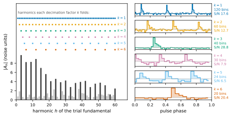
图注：谐波抽取示例：模拟脉冲星有一个窄主峰和一个较弱、较宽的肩部，自转频率为试探基频的三倍。左侧是该试探处插值得到的60个谐波振幅，以噪声为单位，承载信号的谐波标为黑色；上方方块行标记各抽取因子k使用的谐波。右侧是六个子集产生的轮廓，分别以各自噪声标准差归一，并标出格数和箱形信噪比。k=3的折叠恢复脉冲；其他折叠把相同振幅放到错误的周期倍数，形状较不像脉冲星。注入信号的匹配滤波信噪比为32。
怎么看这张图：相同谐波的相位和排列决定能否组成正确脉形。 解释相干复用机制
来源与置信度：arXiv HTML；source verified；https://arxiv.org/html/2610.11749v1/decimation.svg
图3
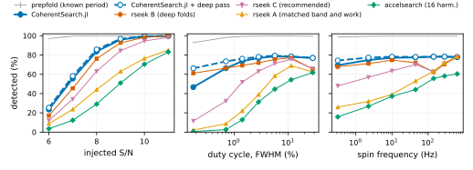
图注：白噪声中的检测比例随注入信噪比、注入占空比（半高全宽占周期的比例）及注入自转频率的变化；各软件阈值均设为每次观测0.1个误报。“深遍”是默认搜索与5 Hz以下120谐波搜索的联合。三种rseek配置见第III节。rseek B每七条观测运行一条，rseek C在76105条中的22368条运行，各自在实际运行的观测上评分。prepfold已知真实周期，是最佳情形参照而非盲搜竞争者。误差棒由观测级自助抽样给出，多数小于标记。
怎么看这张图：深遍联合重新计入试验代价；已知周期参照与盲搜有别。 比较灵敏度与脉宽边界
来源与置信度：arXiv HTML；source verified；https://arxiv.org/html/2610.11749v1/mc_white.svg
图5
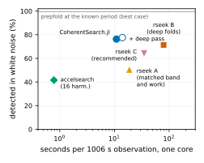
图注：灵敏度与成本：每种搜索在每次观测0.1误报时的白噪声检测比例，对比每条1006秒模拟观测的墙钟时间中位数。所有搜索均在同49条观测上，以单线程进程在其余空闲的Xeon w5-3433上测量。傅里叶域搜索共用的FFT和归一化步骤（不到1秒）未计入。水平线为已知周期下prepfold的折叠结果。深遍在默认搜索基础上增加3.1秒。
怎么看这张图：比较的是搜索步骤成本，传统FFT仍约14倍更快。 量化恢复率与计算成本折中
来源与置信度：arXiv HTML；source verified；https://arxiv.org/html/2610.11749v1/mc_cost.svg
强相关工作
Morello等（2020，MNRAS 497,4654）给出FFA最优周期搜索与相干傅里叶实现的思路，本文是这一方向的实现和大规模比较。Ransom等（2002，AJ124,1788）是长序列傅里叶插值及搜索基础；MeerKAT脉宽工作提供模拟分布而不是待发现目标。
Singh等（2022）在真实GHRSS噪声中的去红噪声对照与本文条件不同，不能用本次合成噪声结论否定其真实数据结果。软件仓库和Zenodo版本均在原文明确提供，可核验实现；本次仅阅读论文证据，没有安装或运行外部代码。
同一事件 / 同类源线索：
- https://arxiv.org/abs/2610.11749
- https://github.com/scottransom/CoherentSearch.jl
- https://doi.org/10.5281/zenodo.23236386
相似工作：
基础理论 / 方法工作：
相反观点 / 张力线索：
相关简报
1. Investigating the nature of magnetic turbulence in Tycho's SNR using X-ray observation
- 来源：arXiv / astro-ph.HE
- 链接：https://arxiv.org/abs/2610.11832
- 作者：Ashwin Aravindaraj, Hui Zhu, Adrien Picquenot, Hsiang-Kuang Chang
- 公告 / 来源日期：2026-10-09
- 阅读层级：相关简报
- 评分：novelty 7/10，importance 8/10，relevance 10/10，final 9.40/10
- 推荐理由：Tycho两种X射线磁湍流尺度诊断相容，可直接检验粒子散射环境，但投影与电子分布退化仍在。
中文题目：Tycho激波的X射线细丝：用宽度相关性探测磁场结构
问题、方法与结论：作者用734 ks Chandra资料，以pGMCA分离2.5–7 keV非热图像，再比较沿同心环的通量相关与2.5–4 keV细丝宽度相关。外缘通量结构的幂律指数约1.05–1.29，细丝宽度给出0.77±0.24；千次误差传播得到中位数0.71±0.26，与2/3标度相容。两种X射线指标的相关尺度约为遗迹半径十分之一，小于先前射电结果的二分之一。
意义与贡献：短寿命X射线电子更接近当前加速区，因而能与长寿命射电电子所描绘的较大尺度环境互补。约25角秒的结构尺度在作者采用的距离下约为10的18次方厘米，远大于其估算的Bell不稳定性尺度，提示先存介质结构可能参与。
可借鉴之处：用细丝宽度替代亮度，是减少相对论电子密度涨落混入磁场诊断的一种尝试；同时比较两种观测代理量，比直接把同步亮度斜率当磁湍流谱更有辨别力。附录量化了分离后残余热成分，热与非热通量比由43%降到8%。
局限与关注点：宽度作为磁场代理依赖同步冷却解释，磁阻尼、投影和激波不规则性仍会影响它。大误差只支持与Kolmogorov式标度相容，不能证明存在纯级联，也不直接测得PeV质子。后续需联合射电、能量依赖细丝和几何前向模型。
原图6
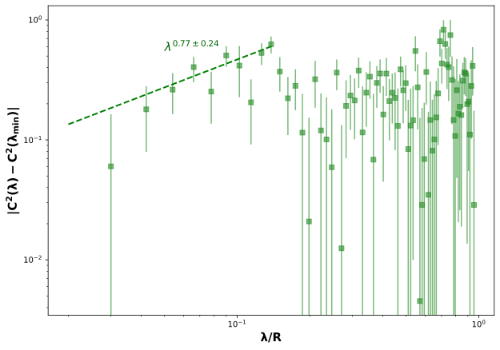
图注：由X射线边缘细丝厚度得到的磁能谱。
怎么看这张图：读斜率时同时保留0.77±0.24及蒙特卡洛0.71±0.26的误差；这是依赖宽度—磁场关系的代理诊断。
来源与置信度：arXiv HTML；source verified；https://arxiv.org/html/2610.11832v1/Two_point_green.svg
2. Exemplary Merging Clusters II: XMM-Newton and Chandra X-ray Observations of MACS J1752.0+4440 and ZwCl 1856.8+6616
- 来源：arXiv / astro-ph.HE
- 链接：https://arxiv.org/abs/2610.10680
- 作者：K. HyeongHan, K. Finner, W. Lee, E. Silich, W. Forman, C. Jones, A. Tümer, S. Randall
- 公告 / 来源日期：2026-10-09
- 阅读层级：相关简报
- 评分：novelty 7/10，importance 8/10，relevance 9/10，final 9.05/10
- 推荐理由：双遗迹星系团X射线马赫数与射电不一致及气体形态提供并合阶段新约束，保留投影与模拟类比限制。
中文题目：双射电遗迹星系团：相似间距可能对应不同并合阶段
问题、方法与结论：作者用深XMM与Chandra资料比较MACSJ1752和ZWCL1856，联合射电、弱透镜与气体热力学重建并合历史。前者东北遗迹处密度跳跃1.6±0.3，对应马赫数1.4±0.2，低于射电推断约3；西南亮度边缘更像冷锋。后者未获得可靠激波跳跃，但气体与星系、质量峰的相对位置支持近首次远心点或其后的阶段，而前者更像偏心碰撞后仍在外行。
意义与贡献：两个系统都有约2 Mpc双遗迹间距，却未必是同一个动力学时钟。把遗迹距离和暗物质晕间距用于自相互作用暗物质约束时，必须先处理外行、转向和回落的简并，否则气体超越质量峰可能被误读。
可借鉴之处：作者在352个TNG-Cluster系统中筛出62个延展候选，再找到两个有长亮尾的形态类比。其先小并合、后偏心大并合的历史提供了形成气体桥的可行路径，并说明前身气体结构也需纳入比较。
局限与关注点：这两例模拟的射电遗迹比观测不对称，质量还比ZWCL1856高约一个数量级，不能当作唯一历史重建。X射线与射电马赫数的区域加权、投影不同；ZWCL1856未检出跳跃受光子数限制，非证明无激波。逆康普顿超额亦仅是提示，需硬X射线检验。
原图9
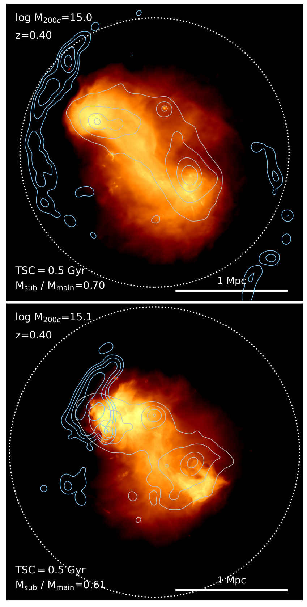
图注：TNG-Cluster在红移0.4找到的两个MACSJ1752与ZWCL1856形态类比系统的投影X射线面亮度图。图像旋转到MACSJ1752的方向；灰、蓝等高线分别表示投影暗物质分布和并合激波的1.4 GHz射电辐射。圆标记R500c；X射线色标跨两个数量级，以同时显示亮核及延展低面亮度结构。类比系统的质量比ZWCL1856高一个数量级。
怎么看这张图：图支持一种产生长尾的路径；射电不对称和质量差异限制了逐项匹配。
来源与置信度：arXiv HTML；source verified；https://arxiv.org/html/2610.10680v1/Xray_analogs.png
3. Wind-Fed Magnetic Flux and the Emergence of X-ray Coronae in Active Galactic Nuclei
- 来源：arXiv / astro-ph.HE
- 链接：https://arxiv.org/abs/2610.10681
- 作者：Rostom Mbarek
- 公告 / 来源日期：2026-10-09
- 阅读层级：相关简报
- 评分：novelty 7/10，importance 7/10，relevance 10/10，final 9.05/10
- 推荐理由：恒星风供磁通至AGN冕区的解析图像与强子通道高度相关；未有辐射动力学自洽验证，创新和重要性限于机制提案。
中文题目：星风供磁如何点亮AGN盘冕：一个可检验的尺度模型
问题、方法与结论：论文提出核周恒星形成的磁化风为内吸积流输送有序磁通。若净极向磁通能存活并向内积累，平均麦克斯韦应力可超过MRI湍流应力，压缩盘大气并形成磁主导楔区。作者用准无力场的简化输运诊断推得临界扭转与约10个引力半径的饱和区；在选定拓扑和流入归一化下，无量纲磁通约51–60，与MAD模拟范围相近。
意义与贡献：这一框架把核周环境、X射线盘冕、喷流和磁通补给联系起来。强磁通不一定意味着强射电喷流：视界开放磁通比例、自转及外部气体阻挡共同影响喷流与盘冕功率分配，为同样有亮盘冕却射电表现不同的源提供检验方向。
可借鉴之处：作者区分磁场控制角动量输运与磁通真正克服扩散的条件，也区分盘冕磁通束和视界喷流磁通。X射线份额在固定拓扑下取决于流入盘冕的质量比例；强子产生次级对则另外要求足够硬、超过反应阈值的质子谱。
局限与关注点：这是解析尺度组织框架，没有进行新观测拟合或全局辐射GRMHD验证。径向“力”加入了有效剪切输运项，不能视为完整动量方程的精确解；磁通存活、三维交换、冷盘截断和耗散效率均未自洽确定。小红点作为前驱也只是候选解释，遮蔽及超爱丁顿替代需独立检验。
原图6
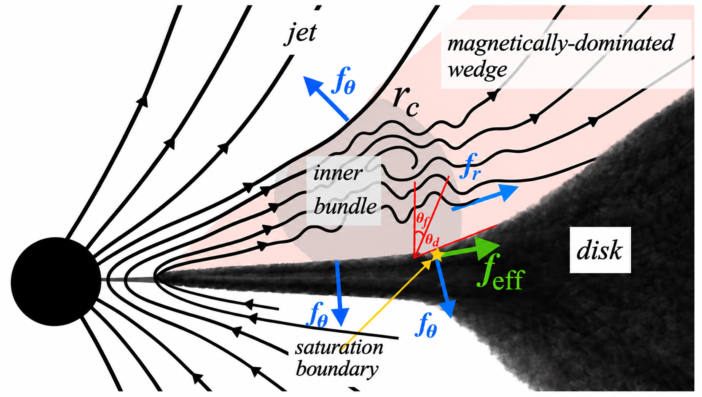
图注：磁主导楔区（θf(r)≤θ≤θd(r)）及其湍流、发射X射线的内磁通束（灰色）的理想化示意图。磁压缩及径向、极向应力阻碍吸积流。星号标出盘与磁主导楔区交界处、约10个引力半径的饱和边界。所画宽楔区仅为示意；只要能形成力平衡一致的饱和区，也允许更窄楔区及截断盘几何。尺寸不按比例。
怎么看这张图：这是作者模型示意，不是模拟快照；图中的边界与开放磁通需未来动力学计算确认。
来源与置信度：arXiv HTML；source verified；https://arxiv.org/html/2610.10681v1/cartoon-official.png
4. Radio Continuum Study of One of the Brightest Large Magellanic Cloud Supernova Remnants N 132D
- 来源：arXiv / astro-ph.HE
- 链接：https://arxiv.org/abs/2610.11606
- 作者：Rami Z. E. Alsaberi, Zachary J. Smeaton, Miroslav D. Filipovic, Roland Kothes, Hidetoshi Sano, Ahmed H. Abdullah, Dejan Urovsevic, Sanja Lazarevic
- 公告 / 来源日期：2026-10-09
- 阅读层级：相关简报
- 评分：novelty 7/10，importance 7/10，relevance 10/10，final 9.05/10
- 推荐理由：N132D射电偏振和谱约束磁场与粒子加速，直接关联已知高能遗迹；常分配磁场不是独立测量。
中文题目：N 132D射电偏振与法拉第结构：强磁场估计依赖模型
问题、方法与结论：作者结合ATCA的2.1、5.5、9 GHz与MeerKAT资料，研究大麦哲伦云超新星遗迹N 132D。射电与X射线径向轮廓强相关，但软X射线仍占主导，空间相关本身不能证明X射线为同步辐射。三个ATCA频率的平均偏振率依次约1.2%、3%、4%；法拉第谱呈宽双峰，主要分布约负180至正200弧度每平方米，表明视线内磁化结构并不简单。
意义与贡献：N 132D已知有甚高能辐射，这些射电结果为激波、磁场和云相互作用提供环境约束。电子能量与磁能固定分配模型估得约90微高斯磁场，支持讨论激波放大；它是模型推断，不能与旋转量得到的约7.9微高斯视线分量直接等同。
可借鉴之处：多频图像先匹配分辨率，再联合谱指数、偏振和法拉第深度，能区分总强度的形态相似与真正的磁场视线信息。宽、重叠法拉第结构用矩图概括，并保留代表位置的完整谱，比只标最强峰更透明。
局限与关注点：积分谱指数负0.74±0.01的拟合未加入本征散布，作者提示误差可能低估；谱图像平均约负0.5也不是同一加权量。分子云、内部磁场反转和无关前景都可解释部分法拉第成分，约90微高斯与最小能量依赖填充因子和粒子分配假设。
原图7
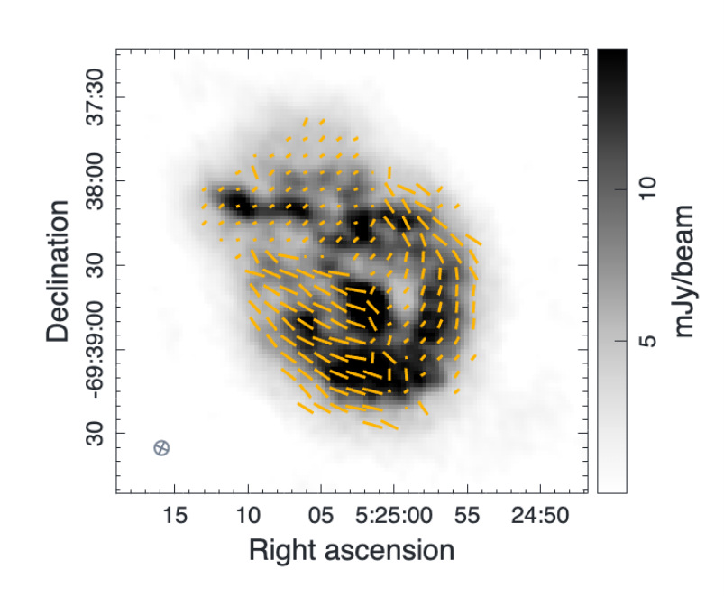
图注：N 132D的磁场方向矢量叠加在ATCA 5500 MHz强度图上。左下圆表示5×5平方角秒的合成波束；右侧色标表示ATCA图像灰度，单位为毫央斯基每波束。
怎么看这张图：方向矢量经过旋转量校正并将电矢量旋转90度；径向趋势与局部有序场相容，不直接给出三维磁场强度。
来源与置信度：arXiv HTML；source verified；https://arxiv.org/html/2610.11606v1/Bvec_new.png
5. The Hand of God Revisited: Revealing the Shell Structure and Jet-Supernova Remnant Interaction in MSH 15-52
- 来源：arXiv / astro-ph.HE
- 链接：https://arxiv.org/abs/2610.11813
- 作者：Lingxiao Dang, Isabel Sander, Samar Safi-Harb, Christopher Fryer
- 公告 / 来源日期：2026-10-09
- 阅读层级：相关简报
- 评分：novelty 7/10，importance 8/10，relevance 9/10，final 9.05/10
- 推荐理由：MSH15-52南壳及喷流相互作用形态光谱补齐源结构，对PWN-SNR连接有用，前身质量模型依赖。
中文题目：MSH 15–52的新壳层与喷流能谱：相互作用证据仍有退化
问题、方法与结论：作者联合Chandra、XMM-Newton和eROSITA，分离RCW 89抛射物、脉冲星喷流及较暗的南北壳层。新资料确认南侧热壳状结构，并识别会污染其能谱的东南延展前景源。壳层既可用较高温热模型，也可用较低温热成分加幂律描述；南喷流局部光子指数约1.6后快速变软，与逆激波作用的解释相容，但形态和硬化尚不能唯一确定机制。
意义与贡献：多仪器视场互补补上了只关注明亮脉冲星风云时容易遗漏的遗迹外层。若喷流确实向壳层注入粒子，壳层的X射线和γ射线解释就需同时考虑超新星与脉冲星供能，而不能把所有非热成分归给同一个激波。
可借鉴之处：先利用宽视场识别重叠前景，再将其模型按面积加入联合拟合，是本工作的关键步骤。抛射物丰度同时对照整体一维产额和局部混合产额，显示约29太阳质量的单一前身估计会随所比较的物理范围改变。
局限与关注点：局部混合模型也允许15或25太阳质量前身，不能宣称质量唯一确定。喷流吸收柱固定与自由时硬化幅度不同；Sedov时标依赖几何、电子离子平衡和壳层供能，南北估值不是同一遗迹的两种真实年龄。前景源仍是候选遗迹，需更深光谱及PWN—SNR模拟检验。
原图8
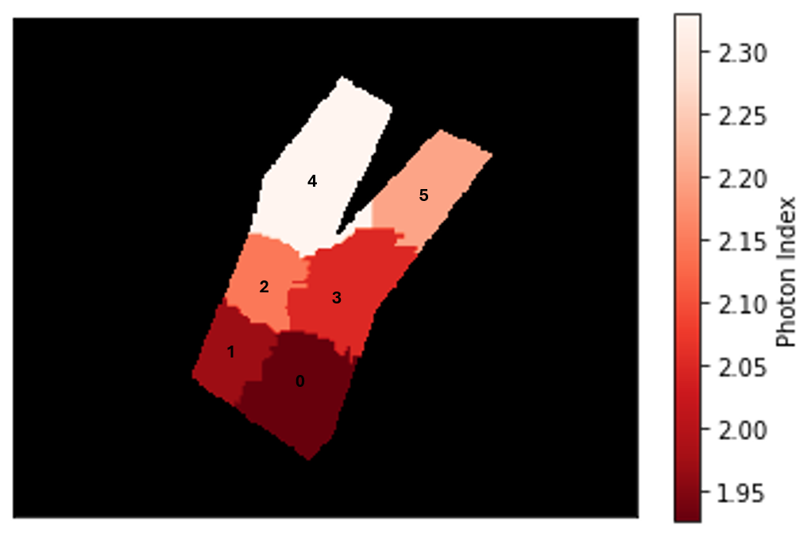
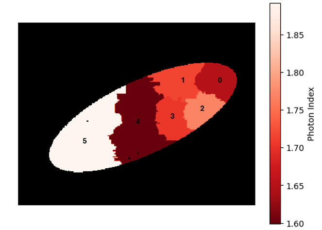
图注：Chandra得到的可能北喷流区域（左）和南喷流区域（右）的光子指数图。各区标为0至5；区域位置参见图2和图7，不确定度列于表4。
怎么看这张图：南侧4区约1.62、5区约1.91的变化须连同吸收柱处理阅读；图像不能单独确认逆激波撞击。
来源与置信度：arXiv HTML；source verified；https://arxiv.org/html/2610.11813v1/pants_phoIndMap_labeled_reorg.png；https://arxiv.org/html/2610.11813v1/southJet_photonIndex_labelled.png
6. Discovery of a Nearby Ultra-fast Magnetic White Dwarf Propeller: Common Pathways to Magnetic Cataclysmic Variables
- 来源：arXiv / astro-ph.HE
- 链接：https://arxiv.org/abs/2610.10689
- 作者：Antonio C. Rodriguez, Kareem El-Badry, R. Michael Rich, Kevin N. Ortiz Ceballos, Ingrid Pelisoli, Casey J. Law, Kaya Mori, Boris Gaensicke
- 公告 / 来源日期：2026-10-09
- 阅读层级：相关简报
- 评分：novelty 8/10，importance 7/10，relevance 9/10，final 9.00/10
- 推荐理由：第三个近邻磁白矮星螺旋桨候选有多波段及光谱证据，但26.8秒自转与场强均待确认。
中文题目：Valeria白矮星推进器候选：快速光变与强磁场仍待定标
问题、方法与结论：多波段研究将距地球265.4±1.7 pc的1eRASS J042633.5−250226解释为第三个磁白矮星推进器系统。TESS给出6.61612小时轨道，低态伴星径向速度半振幅约202 km/s；低X射线光度、强光学耀发、状态切换以及未见明显盘环的多普勒图，共同支持大部分转移物质被抛出的图景。高速光变出现19–30秒候选周期，但不同夜晚和通道不一致，26.8秒不是已相位连接的唯一自转周期。
意义与贡献：系统把快速旋转、磁化和被剥离伴星联系起来，有助检验磁激变双星的演化阶段。采用低态温度、红外半径与洛希瓣充满条件，伴星约0.24太阳质量而半径约0.52太阳半径，明显偏离同质量主序结构。
可借鉴之处：作者没有直接采用混合高低态巡天SED的过热温度，而用低态光谱修正伴星参数；这种状态匹配对可变双星的质量推断很重要。射电低态未检出也按13.4微央斯基的3σ上限保留，未写成系统必然不发射射电。
局限与关注点：约26±3 MG的塞曼识别另有近同强度33 MG解，吸收线归属仍是主系统误差。小于60秒自转约束依赖候选确为自转而非耀发结构，X射线仅约2σ提示。简单磁层半径甚至大于双星间距，数值需谨慎解释；三源且非完备样本的出生率不能证明大多数磁双星都经历此阶段。
原图5
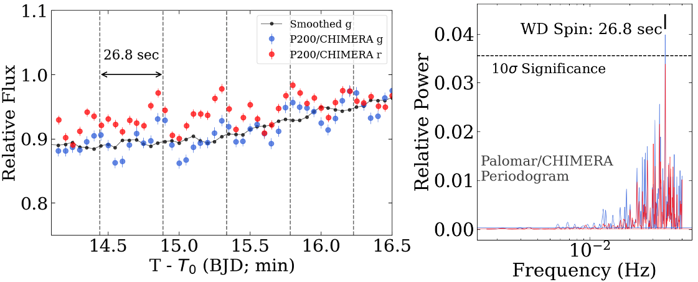
图注：Valeria在2024年9月3日由Palomar/CHIMERA取得的3秒采样高速光学测光；该夜脉动最强，显示约26.8秒的相干脉动。不同夜晚候选周期变化：9月30日约26–30秒，10月24日约19–24秒（附录E）。若两个磁极均有贡献，真实自转周期可能为脉动周期两倍；这些候选均满足小于60秒（第3.1节）。
怎么看这张图：图注忠实保留作者描述；结合正文警告，不同通道与夜晚不一致，仍须跨夜相位连接排除耀发混淆。
来源与置信度：arXiv HTML；source verified；https://arxiv.org/html/2610.10689v1/figs/chimera.png
7. Funnel Leakage of the Wien Fireball in the Early Nebula after a Binary Neutron Star Merger
- 来源：arXiv / astro-ph.HE
- 链接：https://arxiv.org/abs/2610.12359
- 作者：Shao-Ze Li, Yun-Wei Yu, He Gao, Peng-Cheng Yang, Yu Qu
- 公告 / 来源日期：2026-10-09
- 阅读层级：相关简报
- 评分：novelty 8/10，importance 7/10，relevance 9/10，final 9.00/10
- 推荐理由：并合后Wien星云加漏斗泄漏提供准热延展辐射通道，仍为单区预测并非对真实GRB的唯一拟合。
中文题目：并合后磁星的维恩火球可从极区漏斗泄出准热辐射
问题、方法与结论：论文建立并合后中子星自转供能的一区模型，同时演化辐射能量、电子正电子对、光子数和抛射物速度。早期级联产生高光深，康普顿交换饱和却缺乏足够低能光子，使辐射趋于维恩分布而非完整黑体。若喷流打出的极区漏斗持续开放，受辐射压力驱动的对—光子外流可比纯扩散更有效地带走能量，向轴上观察者提供持续百秒量级、峰能数keV至数十keV的准热分量。
意义与贡献：这一机制为部分并合型GRB延展辐射提供替代来源：不必要求主喷流始终以相同方式工作，受抛射物约束的中央星云可储存并释放能量。作者提出维恩谱、与平台并存、随后转为非热谱等可检验特征，关联GRB 230307A等现象。
可借鉴之处：分别追踪光子数与能量避免强制黑体温度；同时区分真实漏出光度和除以束射立体角后的各向同性等效光度，能解释后者为何可超过瞬时自转功率而不违反能量守恒。
局限与关注点：结果依赖存活中子星、漏斗不被回填、预设开角与级联光子注入。一维均匀模型没有自洽模拟漏斗形成、重子负载及外流辐射输运，也未对具体GRB作统计拟合。模型谱峰与观测拟合温度不是同一量，不能仅凭能区接近便宣称解释了全部10–100 keV热成分。
原图6
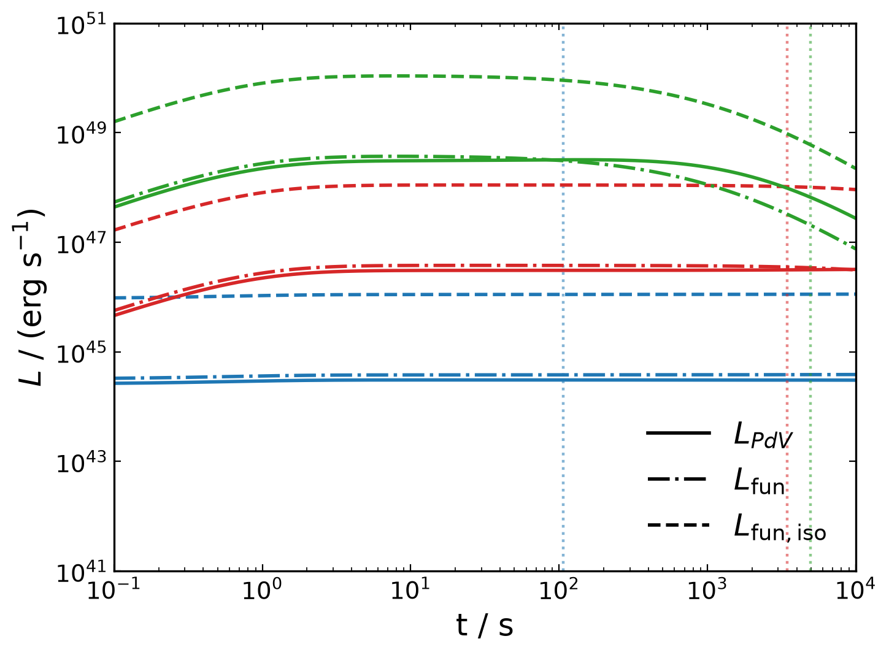
图注：开角15度、初始周期1毫秒时的绝热损失功率、总漏斗泄漏光度Lfun及各向同性等效光度Lfun,iso（等于Lfun除以束射份额fb）。蓝、红、绿线分别对应磁场10的13、14、15次方高斯。同色竖直点线标记各磁场情况下康普顿y参数达到1的时刻。
怎么看这张图：比较真实漏出功率与等效光度；竖线是模型从饱和康普顿阶段转出的标志，不是观测拟合出的转折。
来源与置信度：arXiv HTML；source verified；https://arxiv.org/html/2610.12359v1/fig_LPdV_Lfun_funnel.png
8. Flux Dependence of the 1\,keV Soft X-ray Feature in SAX J1808.4-3658 with \textit{NICER}
- 来源：arXiv / astro-ph.HE
- 链接：https://arxiv.org/abs/2610.10951
- 作者：Katherine Bruce, Anne M. Lohfink, Jaiverdhan Chauhan, Suchismito Chattopadhyay, Sachiko Tsuruta, Andrew C. Liebmann
- 公告 / 来源日期：2026-10-09
- 阅读层级：相关简报
- 评分：novelty 7/10，importance 7/10，relevance 9/10，final 8.70/10
- 推荐理由：SAX J1808软特征随通量变化约束反射介质，但密度差异依赖模型，贡献为局部增量。
中文题目：SAX J1808的1 keV软特征随亮度变化，起源仍非唯一
问题、方法与结论：作者重分析2019与2022爆发的NICER资料，筛选81个0.7–10 keV能谱，以吸收、康普顿化反射和黑体作基线，再在0.7–1.4 keV逐格加入未分辨高斯分量。软超额主要出现在0.9–1.0 keV，接近爆发峰或短暂再耀发时较强；线强与主连续谱及黑体通量在两次爆发中均正相关。2019年与反射通量也相关，2022年这一关系误差很大，尚无约束。
意义与贡献：结果使软特征与内吸积流状态的联系更具体，支持照射和再处理解释，可能涉及磁层截断附近的高密度等离子体。2019与2022的相关斜率不同，提示它不只是随亮度按固定比例缩放；但这些变化不能单独定位发射区域或识别某条原子谱线。
可借鉴之处：作者统一处理两次爆发、剔除热核暴及背景异常，并以逐能量扫描和两万次测量误差重采样检验趋势。对重复瞬变，跨爆发比较关系的斜率、可约束性与采样阶段，比只比较一次联合观测的线中心更有信息。
局限与关注点：增添分量的Δχ²至少9只作单试验门槛，未校正多能量搜索；不能称为全局3σ发现。NICER分辨不了潜在Fe-L与轻元素混合线，多项连续谱参数固定且残余校准未完全排除。2022未覆盖上升期，高分辨率宽能段与脉冲相位能谱才可进一步检验反射、风和磁层几何。
原图3
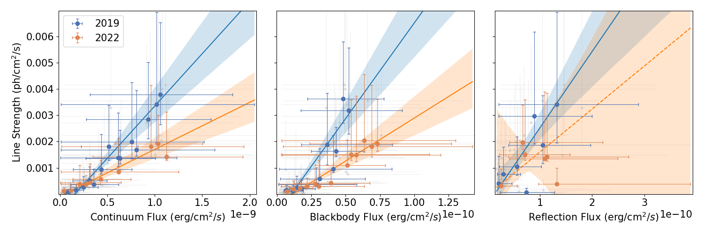
图注：约1 keV特征强度与各辐射分量通量的关系。对固定能量试验中的所有检出（图2），绘出每次NICER观测的高斯线归一化与计算得到的分量通量。颜色区分2019年（蓝）和2022年（橙）；归一化和通量的误差棒为3σ。
怎么看这张图：比较两次爆发的斜率及反射面板误差，不把2022年无约束当作已证明不相关；图只包含检出样本。
来源与置信度：arXiv HTML；source verified；https://arxiv.org/html/2610.10951v1/fluxplot_rev2.png
9. Listening to the Horizon: Probing Near-Horizon Reflectivity with GW250114
- 来源：arXiv / astro-ph.HE
- 链接：https://arxiv.org/abs/2610.12429
- 作者：R. Prasad, Subhodeep Sarkar, Sudipta Sarkar
- 公告 / 来源日期：2026-10-09
- 阅读层级：相关简报
- 评分：novelty 7/10，importance 8/10，relevance 8/10，final 8.70/10
- 推荐理由：GW250114直接波回声零检验给出反射率条件上限，模板归一及表面假设限制普适性。
中文题目：GW250114未见直接波回声：给出有模型条件的反射率上限
问题、方法与结论：作者以GW250114并合后的直接波校准坠落辐射，在去除主导准正规模的Hanford与Livingston资料中联合拟合直接波和首个回声。采用Kerr外部时空、带内恒定复反射率及点粒子坠落模板，搜索12–300毫秒延迟，未发现回声，ln贝叶斯因子为负2.9。边缘化延迟后，反射振幅的90%可信上限为0.059，对应反射能量份额低于约0.35%。
意义与贡献：普通回声检索往往只限制自由模板振幅；这里尝试用同一坠落源的已观测直接波确定入射辐射归一化，从而把未检出转成内边界响应约束。它不要求直接波本身就是视界本征模，也不能把未检出写成对所有无视界天体的排除。
可借鉴之处：噪声校准包括102段离源资料与3000次跨探测器时间滑移；400次随机注入中，联合拟合的90%上限覆盖约92%的真值。直接波与回声频谱近正交，使共同振幅边缘化不会明显放宽基线结果。
局限与关注点：若先验改为复反射率平面均匀，上限变成0.073。主要理论误差是用点粒子模型映射可比质量并合的向内辐射，并固定剩余黑洞参数；频率依赖反射率和非Kerr多极矩还未检验。下一代探测器能量份额约十万分之一的预期只是信噪比缩放，非完整模拟搜索。
原图4
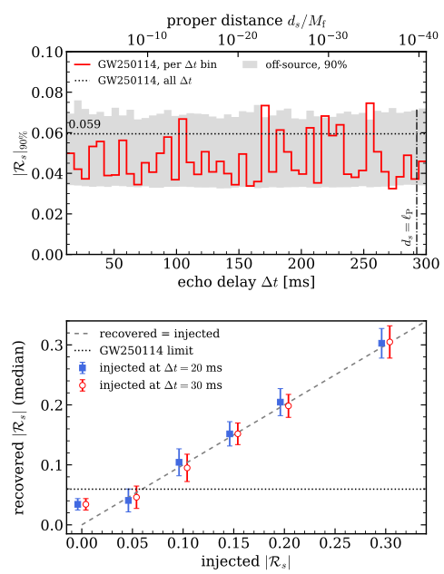
图注：上：GW250114反射振幅绝对值的90%上限，按延迟Δt的6毫秒区间绘制（红色），与纯噪声预期的5%–95%范围（灰色）比较；点线为对全部延迟的上限。上轴为表面距视界的固有距离，以剩余质量Mf为单位。下：在50段离源资料中注入延迟20和30毫秒回声后，恢复的反射振幅与注入值比较。标记为后验中位数的平均，误差棒为不同资料段间标准差；注入值得到良好恢复。
怎么看这张图：上限按基线先验解读；不同延迟区间有噪声波动，0.059是边缘化值而非每个位置完全相同。
来源与置信度：arXiv HTML；source verified；https://arxiv.org/html/2610.12429v1/fig4_bound.svg
10. Neutrino flavor conversion alters the lepton-emission self-sustained asymmetry in core-collapse supernovae
- 来源：arXiv / astro-ph.HE
- 链接：https://arxiv.org/abs/2610.10685
- 作者：Noah Roux, Irene Tamborra, Maryna Mesiura
- 公告 / 来源日期：2026-10-09
- 阅读层级：相关简报
- 评分：novelty 8/10，importance 7/10，relevance 8/10，final 8.65/10
- 推荐理由：二维中微子输运揭示方向依赖味转换增强LESA；5至10百分比变化有条件，未闭合流体反馈。
中文题目：多维中微子味演化可增强LESA偶极，但尚缺流体反馈
问题、方法与结论：作者用GPU求解器FOCACCIA，在20–45 km半环域中联立中微子量子动力学、碰撞和平流，以一个18.6太阳质量核心坍缩模型的反弹后0.5秒快照，加上人为发射偶极来模拟LESA。线性分析发现南部快速不稳定性、解耦附近碰撞不稳定性及其他区域的慢不稳定性；非线性演化以快速转换影响最大，归一化电子轻子数偶极在约30 km以外增强5%–10%。
意义与贡献：LESA使不同方向的中微子与反中微子分布不同，味转换也就不能简单用一个全局平衡比例描述。偶极的改变可能影响加热、核合成及中子星反冲，因此需要与爆炸流体动力学共同演化后再判断方向和幅度。
可借鉴之处：模型保留两个有效动量方位角，显示强制动量轴对称会压低外层不稳定性的增长率；同时把“存在不稳定模”与“准稳态产生显著味变化”分开，慢模虽存在，在本次300微秒演化中贡献却很小。
局限与关注点：这不是完整三维超新星模拟：仅两味、固定背景，无μ子并简化物质项，发射偶极亦预设。自相互作用强度衰减至0.025，选定一维方向的无衰减对照数密度差小于1%，只支持当前设置；横向平流作用小也依赖角向梯度温和，不能推广到强小尺度起伏。
原图13
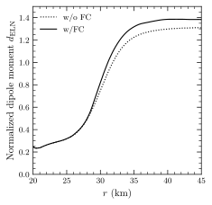
图注：归一化电子轻子数偶极矩dELN（电子轻子数密度的偶极分量与单极分量之比）（见式14）随半径的变化。点线与实线分别表示无味转换和有味转换的稳态解，取模拟时间275–300微秒平均。半径约30 km以外，味转换使LESA偶极增强5%–10%。
怎么看这张图：这是固定背景与预设偶极下的数值比较；不能直接当作自洽爆炸模型或地球接收到的中微子信号预测。
来源与置信度：arXiv HTML；source verified；https://arxiv.org/html/2610.10685v1/fig13.svg
11. A weakly modelled view of the joint compact-binary mass plane: population structure and spectral-siren cosmology
- 来源：arXiv / astro-ph.HE
- 链接：https://arxiv.org/abs/2610.10535
- 作者：Viola De Renzis, Alessandro Agapito, Michele Mancarella
- 公告 / 来源日期：2026-10-09
- 阅读层级：相关简报
- 评分：novelty 8/10，importance 7/10，relevance 8/10，final 8.65/10
- 推荐理由：二维质量混合与特征几何改善谱警报宇宙学，信息提升依赖模型灵活性比较，属于方法增量。
中文题目：联合双星质量分布保留更多谱警报器宇宙学信息
问题、方法与结论：作者对GWTC-5.0中237个紧致双星事件作层次贝叶斯分析，用可移动、相关的二维高斯混合重建源参考系双分量质量，并同时拟合宇宙学和选择效应。二维模型得到哈勃常数59.5，68.3%可信区间为负14.6、正16.5 km/s/Mpc；相较仅让主星质量灵活变化、质量比采用统一幂律的对照，区间宽度缩小33.4%。
意义与贡献：质量谱特征提供内部红移标尺，二维几何可减少把质量分布变化与宇宙学缩放互相替代的自由度。约10和35太阳质量的结构主要通过共同质量尺度关联哈勃常数；中间弱结构还保留质量比方向的信息。结果误差仍大，并未解决哈勃张力。
可借鉴之处：自动形态识别把某种结构在后验中的恢复频率、出现时的突出程度和位置分别记录。约35太阳质量特征在主星投影可像峰或斜率转折，但联合质量平面更清楚地表现为近等质量聚集；混合分量本身并未被直接解释成不同形成通道。
局限与关注点：模型假设质量谱不随红移演化且使用简化自旋分布，演化自由度会引入新退化。中间弱峰受形态阈值影响，95.4%恢复率不是天体物理存在的发现置信度；互信息也不是各特征对总约束的可加因果贡献。二维模型还移动了中心值，需更多注入与模型比较评估系统误差。
原图2
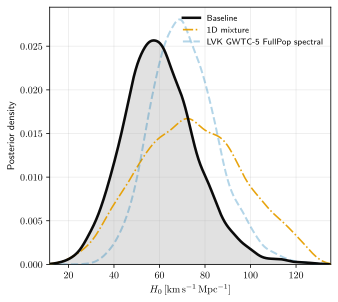
图注：GWTC-5.0谱警报器给出的哈勃常数边缘后验密度。粗黑线为本文基线联合灵活质量模型，赭色点划线为灵活一维混合对照，蓝色虚线为用于比较的LVK GWTC-5.0 FullPop谱警报器结果。
怎么看这张图：重点比较宽度与中心位置同时变化；这些模型并非三个独立观测样本。
来源与置信度：arXiv HTML；source verified；https://arxiv.org/html/2610.10535v1/H0_marginal_comparison_2D_1D_LVK.svg
12. ACORN I. Massive Black Hole Seeding and Tidal Disruption Events from Star Clusters in Cosmological Simulations
- 来源：arXiv / astro-ph.HE
- 链接：https://arxiv.org/abs/2610.12398
- 作者：Yihao Zhou, Tiziana Di Matteo, Claire E. Williams, Aklant Kumar Bhowmick, Marta Reina-Campos, Carl L. Rodriguez, Elena González Prieto, Laura Blecha
- 公告 / 来源日期：2026-10-09
- 阅读层级：相关简报
- 评分：novelty 8/10，importance 7/10，relevance 8/10，final 8.65/10
- 推荐理由：星团环境驱动种子黑洞及TDE增长的子网格模型，百倍并合率限于5sigma过密模拟区。
中文题目：ACORN把星团种子与潮汐瓦解供能接入早期黑洞模拟
问题、方法与结论：ACORN在ASTRID星系形成框架中加入未分辨星团的形成、失质量、膨胀和黑洞播种：种子质量由星团质量、紧致度及金属丰度决定，再追踪气体吸积、并合与潮汐瓦解恒星的供给。四组同初始条件模拟针对一个5σ过密区演化到红移6；星团方案可在同一晕内持续形成多个种子，增强早期并合，而最重黑洞后期质量在不同方案间趋近。
意义与贡献：工作把“星团能形成种子”的局部动力学模型接到星系环境，使种子数量、质量和空间聚集不再只由晕阈值决定。低于约一万太阳质量的黑洞在部分贫气体环境中可主要靠潮汐瓦解增长，耀发也可能暂时暴露平时暗弱的种子。
可借鉴之处：区分持续气体吸积光度与“若发生一次潮汐瓦解”的峰值光度，避免把瞬变包络当作持续供能。对照保留相同星系形成设置，并单列引力波反冲开关，能追踪种子机制怎样先改变并合、再影响后续吸积。
局限与关注点：这是单个刻意选择的极端环境，不能外推宇宙平均种子或LISA事件率。星团与亚千秒差距双星硬化未分辨，反冲假设零自旋因而偏保守；瓦解率及吞噬一半恒星质量是处方。低质量种子的耀发亮度还把经验关系外推到校准质量以下，须更高分辨率和多环境样本检验。
原图20
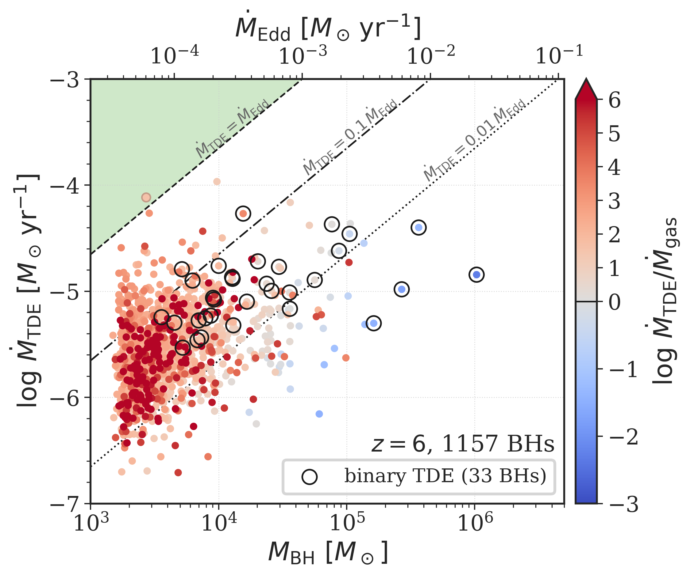
图注：SC-noR模拟在红移6时，潮汐瓦解贡献的质量增长率随黑洞质量的分布。点的颜色表示瓦解增长率与气体吸积率之比；黑圈标记经历双星增强瓦解的黑洞，其质量取并合剩余体质量。虚线、点划线、点线分别为爱丁顿吸积率的1、0.1和0.01倍；上轴标出对应的爱丁顿质量吸积率（太阳质量/年，按图中轴标）。绿色区域表示瓦解驱动增长超过爱丁顿吸积率。
怎么看这张图：这里是处方给出的平均质量增长率，不是单次耀发的峰值光度；所有点属于同一过密区模拟。
来源与置信度：arXiv HTML；source verified；https://arxiv.org/html/2610.12398v1/plots/TDE_rate_vs_BHmass_ratio.png
说明
评分由 LLM 给出初评，再由本地阈值策略过滤；IACT、TeV 伽马射线和高能中微子天文学按重点方向处理。